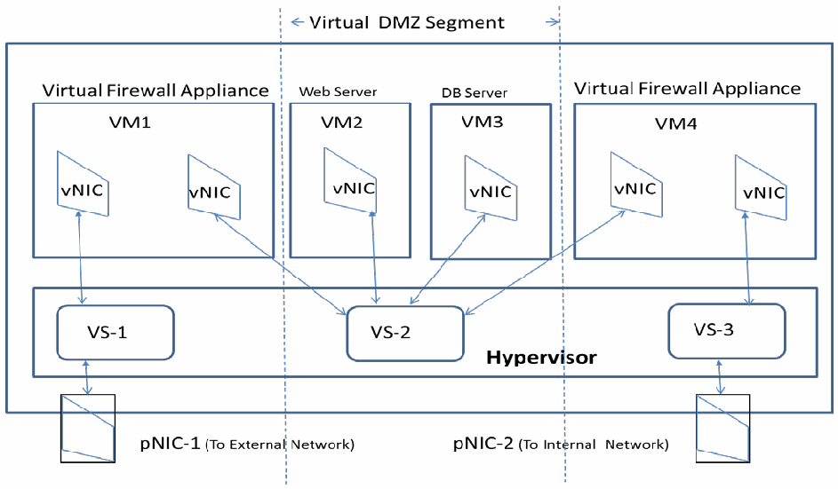
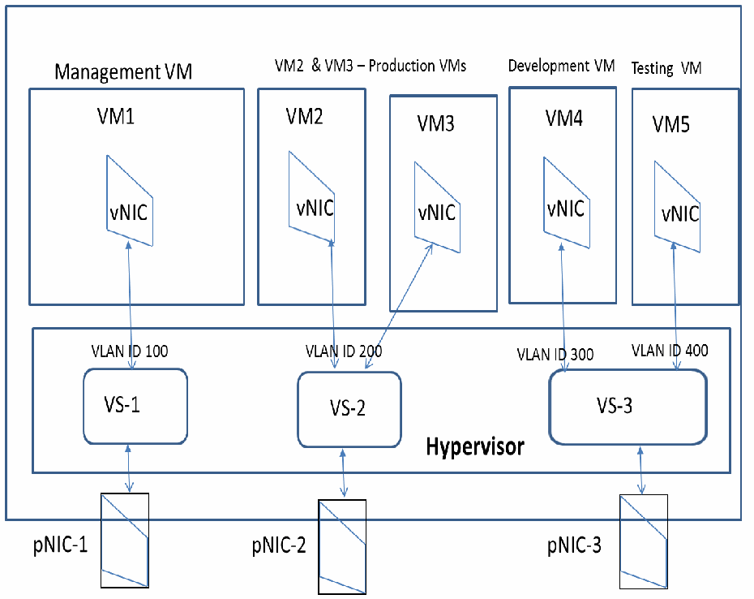
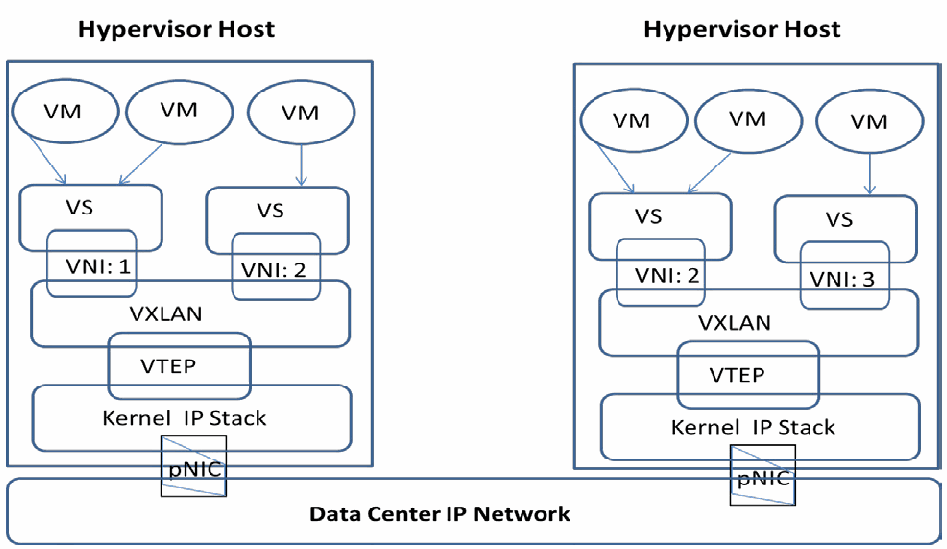

NIST Special Publication · PDF 原文抽出
Secure Virtual Network Configuration for Virtual Machine (VM) Protection
仮想マシン（VM）保護のための仮想ネットワークセキュア構成
NIST SP 800-125B（Secure Virtual Network Configuration for Virtual Machine (VM) Protection）の英文と日本語訳を段落ごとに並べた閲覧用ページです。仮想マシンとそのアプリケーションを保護するため、ネットワーク分割、経路冗長性、ファイアウォールによる通信制御、VM通信の監視に関する構成選択肢と推奨事項を示します。 翻訳は非公式です。要件の確認にはNIST の正式版 PDFを参照してください。
PDF から抽出した原文は原本との照合待ちです。
NIST Special Publication 800-125B
NIST特別刊行物800-125B
未レビュー訳Secure Virtual Network Configuration for Virtual Machine (VM) Protection
仮想マシン（VM）保護のためのセキュアな仮想ネットワーク構成
未レビュー訳Ramaswamy Chandramouli
ラマスワミー・チャンドラモウリ
未レビュー訳This publication is available free of charge from: http://dx.doi.org/10.6028/NIST.SP.800-125B
本刊行物は、http://dx.doi.org/10.6028/NIST.SP.800-125B から無料で入手できます。
未レビュー訳C O M P U T E R S E C U R I T Y
コンピュータセキュリティ
未レビュー訳
NIST Special Publication 800-125B
NIST特別刊行物800-125B
未レビュー訳Secure Virtual Network Configuration for Virtual Machine (VM) Protection
仮想マシン（VM）保護のためのセキュアな仮想ネットワーク構成
未レビュー訳Ramaswamy Chandramouli Computer Security Division Information Technology Laboratory
ラマスワミー・チャンドラモウリ コンピュータセキュリティ部門 情報技術研究所
未レビュー訳This publication is available free of charge from: http://dx.doi.org/10.6028/NIST.SP.800-125B
本刊行物は、http://dx.doi.org/10.6028/NIST.SP.800-125B から無料で入手できます。
未レビュー訳March 2016
2016年3月
未レビュー訳U.S. Department of Commerce Penny Pritzker, Secretary
米国商務省 ペニー・プリツカー長官
未レビュー訳National Institute of Standards and Technology
国立標準技術研究所
未レビュー訳Willie May, Under Secretary of Commerce for Standards and Technology and Director
ウィリー・メイ、標準技術担当商務次官兼所長
未レビュー訳Authority
権限
未レビュー訳This publication has been developed by NIST in accordance with its statutory responsibilities under the Federal Information Security Modernization Act (FISMA) of 2014, 44 U.S.C. § 3541 et seq., Public Law (P.L.) 113-283. NIST is responsible for developing information security standards and guidelines, including minimum requirements for federal information systems, but such standards and guidelines shall not apply to national security systems without the express approval of appropriate federal officials exercising policy authority over such systems. This guideline is consistent with the requirements of the Office of Management and Budget (OMB) Circular A-130.
本刊行物は、2014年連邦情報セキュリティ近代化法（FISMA）44 U.S.C. § 3541 et seq.、公法（P.L.）113-283に基づく法定責任に従ってNISTが作成したものです。NISTは、連邦情報システムの最低要件を含む情報セキュリティ標準およびガイドラインの策定に責任を負いますが、そのような標準およびガイドラインは、当該システムに関する政策権限を行使する適切な連邦政府職員の明示的な承認がない限り、国家安全保障システムには適用してはならない（shall not）。本ガイドラインは、行政管理予算局（OMB）通達A-130の要件に適合しています。
未レビュー訳Nothing in this publication should be taken to contradict the standards and guidelines made mandatory and binding on federal agencies by the Secretary of Commerce under statutory authority. Nor should these guidelines be interpreted as altering or superseding the existing authorities of the Secretary of Commerce, Director of the OMB, or any other federal official. This publication may be used by nongovernmental organizations on a voluntary basis and is not subject to copyright in the United States. Attribution would, however, be appreciated by NIST.
本刊行物のいかなる内容も、法的権限に基づき商務長官が連邦機関に義務付け、拘束力を持たせた標準およびガイドラインに反すると解釈すべきではない（should）。また、これらのガイドラインは、商務長官、OMB長官、またはその他の連邦政府職員の既存の権限を変更または置き換えるものと解釈すべきではない（should）。本刊行物は、非政府組織が任意に使用してもよく（may）、米国内では著作権の対象ではありません。ただし、NISTへの帰属表示を歓迎します。
未レビュー訳National Institute of Standards and Technology Special Publication 800-125B Natl. Inst. Stand. Technol. Spec. Publ. 800-125B, 30 pages (March 2016) CODEN: NSPUE2
国立標準技術研究所、特別刊行物800-125B、Natl. Inst. Stand. Technol. Spec. Publ. 800-125B、30ページ（2016年3月）CODEN: NSPUE2
未レビュー訳This publication is available free of charge from: http://dx.doi.org/10.6028/NIST.SP.800-125B
本刊行物は、http://dx.doi.org/10.6028/NIST.SP.800-125B から無料で入手できます。
未レビュー訳原本の表画像

Comments on this publication may be submitted to: National Institute of Standards and Technology Attn: Computer Security Division, Information Technology Laboratory 100 Bureau Drive (Mail Stop 8930) Gaithersburg, MD 20899-8930
本刊行物に関するコメントは、次の宛先に提出してもよい（may）。国立標準技術研究所、宛先：コンピュータセキュリティ部門、情報技術研究所、100 Bureau Drive（Mail Stop 8930）、Gaithersburg, MD 20899-8930
未レビュー訳Reports on Computer Systems Technology
コンピュータシステム技術に関する報告
未レビュー訳The Information Technology Laboratory (ITL) at the National Institute of Standards and Technology (NIST) promotes the U.S. economy and public welfare by providing technical leadership for the Nation’s measurement and standards infrastructure. ITL develops tests, test methods, reference data, proof of concept implementations, and technical analyses to advance the development and productive use of information technology. ITL’s responsibilities include the development of management, administrative, technical, and physical standards and guidelines for the cost-effective security and privacy of other than national security-related information in federal information systems. The Special Publication 800-series reports on ITL’s research, guidelines, and outreach efforts in information system security, and its collaborative activities with industry, government, and academic organizations.
国立標準技術研究所（NIST）の情報技術研究所（ITL）は、米国の計測および標準インフラストラクチャを技術面で主導し、米国経済と公共の福祉を促進しています。ITLは、情報技術の発展と生産的利用を促進するため、試験、試験方法、参照データ、概念実証実装、および技術分析を開発しています。ITLの責任には、連邦情報システムにおける国家安全保障関連以外の情報の費用対効果の高いセキュリティとプライバシーのための管理、運用、技術および物理的な標準とガイドラインの策定が含まれます。特別刊行物800シリーズは、情報システムセキュリティに関するITLの研究、ガイドラインおよび普及活動、ならびに産業界、政府および学術機関との協働活動を報告するものです。
未レビュー訳Abstract
概要
未レビュー訳Virtual machines (VMs) are key resources to be protected since they are the compute engines hosting mission-critical applications. Since VMs are end nodes of a virtual network, the configuration of the virtual network is an important element in the security of the VMs and their hosted applications. The virtual network configuration areas discussed in this document are network segmentation, network path redundancy, traffic control using firewalls, and VM traffic monitoring. This document analyzes the configuration options under these areas and presents a corresponding set of recommendations for secure virtual network configuration for VM protection.
仮想マシン（VM）は、ミッションクリティカルなアプリケーションをホストする計算エンジンであるため、保護すべき重要なリソースです。VMは仮想ネットワークのエンドノードであるため、仮想ネットワークの構成は、VMおよびそこでホストされるアプリケーションのセキュリティにおける重要な要素です。本書で取り上げる仮想ネットワーク構成領域は、ネットワークのセグメンテーション、ネットワーク経路の冗長性、ファイアウォールを使用したトラフィック制御、およびVMトラフィックの監視です。本書では、これらの領域における構成オプションを分析し、VM保護のためのセキュアな仮想ネットワーク構成に関する一連の推奨事項を提示します。
未レビュー訳Keywords
キーワード
未レビュー訳cloud computing; overlay-based virtual networking; virtual firewall; virtual local area network (VLAN); virtual machine (VM); virtual network segmentation; virtual switch; virtualization
クラウドコンピューティング；オーバーレイベースの仮想ネットワーキング；仮想ファイアウォール；仮想ローカルエリアネットワーク（VLAN）；仮想マシン（VM）；仮想ネットワークセグメンテーション；仮想スイッチ；仮想化
未レビュー訳Executive Summary
エグゼクティブサマリー
未レビュー訳Data center infrastructures are rapidly becoming virtualized due to increasing deployment of virtualized hosts (also called hypervisor hosts). Virtual machines (VMs) are the key resources to be protected in this virtualized infrastructure since they are the compute engines hosting mission-critical applications of the enterprise. VMs are the end nodes of a virtual network, so the virtual network’s configuration is an important element in the overall security strategy for VMs.
仮想化ホスト（ハイパーバイザーホストとも呼ばれる）の導入が拡大しているため、データセンターのインフラストラクチャは急速に仮想化されています。仮想マシン（VM）は、企業のミッションクリティカルなアプリケーションをホストする計算エンジンであるため、この仮想化インフラストラクチャにおいて保護すべき重要なリソースです。VMは仮想ネットワークのエンドノードであるため、仮想ネットワークの構成はVMの総合的なセキュリティ戦略における重要な要素です。
未レビュー訳The purpose of this NIST Special Publication (SP) is to provide an analysis of various virtual network configuration options for protection of virtual machines (VMs) and present recommendations based on the analysis. The relevant configuration areas discussed in this publication are network segmentation, network path redundancy, traffic control through firewalls, and VM traffic monitoring. Each configuration option in each of these areas has different advantages and disadvantages, which are identified in this publication. Analysis of these has led to the development of one or more security recommendations for each configuration area.
このNIST特別刊行物（SP）の目的は、仮想マシン（VM）を保護するためのさまざまな仮想ネットワーク構成オプションを分析し、その分析に基づく推奨事項を提示することです。本刊行物で取り上げる関連構成領域は、ネットワークのセグメンテーション、ネットワーク経路の冗長性、ファイアウォールによるトラフィック制御、およびVMトラフィックの監視です。これらの各領域における構成オプションにはそれぞれ異なる利点と欠点があり、本刊行物ではそれらを特定します。これらの分析により、各構成領域に対する1つ以上のセキュリティ推奨事項が策定されました。
未レビュー訳The motivation for this document is the trend in U.S. Federal Government agencies to deploy server virtualization within their internal information technology (IT) infrastructures and to use VMs from cloud service providers for agency applications. The target audience for the document is Chief Information Security Officers (CISOs) and other agency personnel and contractors involved in providing the necessary security protections for agency applications through appropriate virtual network configurations. The intended goal is that the analysis of the configuration options provided in this report, along with the security recommendations, will facilitate making informed decisions with respect to architecting the virtual network configuration. Such a configuration is expected to ensure the appropriate level of network protection for all VMs and the application workloads running in them.
本書の背景には、米国連邦政府機関が内部情報技術（IT）インフラストラクチャ内でサーバー仮想化を導入し、機関のアプリケーションにクラウドサービスプロバイダーのVMを利用する傾向があります。本書の対象読者は、最高情報セキュリティ責任者（CISO）、ならびに適切な仮想ネットワーク構成を通じて機関のアプリケーションに必要なセキュリティ保護を提供する業務に携わるその他の機関職員および請負業者です。本報告書に示す構成オプションの分析とセキュリティ推奨事項は、仮想ネットワーク構成の設計に関する十分な情報に基づく意思決定を促進することを意図しています。このような構成により、すべてのVMおよびその上で実行されるアプリケーションのワークロードに適切なレベルのネットワーク保護が確保されることが期待されます。
未レビュー訳Table of Contents
目次
未レビュー訳Executive Summary .............................................................................................................. iii
エグゼクティブサマリー .............................................................................................................. iii
未レビュー訳1. Introduction — 1
1. はじめに — 1
未レビュー訳1.1 Purpose and Scope — 1
1.1 目的と適用範囲 — 1
未レビュー訳1.2 Organization of this Publication — 2
1.2 本刊行物の構成 — 2
未レビュー訳2. Network Segmentation Configurations for VM Protection — 3
2. VM保護のためのネットワークセグメンテーション構成 — 3
未レビュー訳2.1 Separating Virtualized Hosts — 3
2.1 仮想化ホストの分離 — 3
未レビュー訳2.1.1 Advantages — 3
2.1.1 利点 — 3
未レビュー訳2.1.2 Disadvantages — 3
2.1.2 欠点 — 3
未レビュー訳2.2 Using Virtual Switches — 4
2.2 仮想スイッチの使用 — 4
未レビュー訳2.2.1 Advantages — 4
2.2.1 利点 — 4
未レビュー訳2.2.2 Disadvantages — 4
2.2.2 欠点 — 4
未レビュー訳2.2.3 Distributed Virtual Switches — 4
2.2.3 分散型仮想スイッチ — 4
未レビュー訳2.3 Using Virtual Firewalls — 4
2.3 仮想ファイアウォールの使用 — 4
未レビュー訳2.3.1 Advantages — 5
2.3.1 利点 — 5
未レビュー訳2.3.2 Disadvantages — 5
2.3.2 欠点 — 5
未レビュー訳2.4 Using VLANs in Virtual Network — 6
2.4 仮想ネットワークでのVLANの使用 — 6
未レビュー訳2.4.1 Advantages — 8
2.4.1 利点 — 8
未レビュー訳2.4.2 Disadvantages — 8
2.4.2 欠点 — 8
未レビュー訳2.5 Using Overlay-Based Virtual Networking — 8
2.5 オーバーレイベースの仮想ネットワーキングの使用 — 8
未レビュー訳2.5.1 Advantages — 10
2.5.1 利点 — 10
未レビュー訳2.5.2 Disadvantages — 10
2.5.2 欠点 — 10
未レビュー訳2.6 Security Recommendations for Network Segmentation — 10
2.6 ネットワークセグメンテーションに関するセキュリティ推奨事項 — 10
未レビュー訳3. Network Path Redundancy Configurations for VM Protection — 12
3. VM保護のためのネットワーク経路冗長化構成 — 12
未レビュー訳3.1 NIC Teaming Configuration for Network Path Redundancy — 12
3.1 ネットワーク経路冗長化のためのNICチーミング構成 — 12
未レビュー訳3.2 Policy Configuration Options for NIC Teaming — 12
3.2 NICチーミングのポリシー構成オプション — 12
未レビュー訳3.3 Security Recommendations for Configuring Network Path Redundancy — 13
3.3 ネットワーク経路冗長化の構成に関するセキュリティ推奨事項 — 13
未レビュー訳4. VM Protection through Traffic Control Using Firewalls — 14
4. ファイアウォールを使用したトラフィック制御によるVM保護 — 14
未レビュー訳4.1 Physical Firewalls for VM Protection — 16
4.1 VM保護のための物理ファイアウォール — 16
未レビュー訳4.1.1 Advantages — 16
4.1.1 利点 — 16
未レビュー訳4.1.2 Disadvantages — 16
4.1.2 欠点 — 16
未レビュー訳4.2 Subnet-Level Virtual Firewalls — 16
4.2 サブネットレベルの仮想ファイアウォール — 16
未レビュー訳4.2.1 Advantages — 17
4.2.1 利点 — 17
未レビュー訳4.2.2 Disadvantages — 17
4.2.2 欠点 — 17
未レビュー訳4.3 Kernel-Based Virtual Firewalls — 17
4.3 カーネルベースの仮想ファイアウォール — 17
未レビュー訳4.3.1 Advantages — 17
4.3.1 利点 — 17
未レビュー訳4.3.2 Disadvantages — 18
4.3.2 欠点 — 18
未レビュー訳4.4 Security Recommendations for Firewall Deployment Architecture — 18
4.4 ファイアウォール導入アーキテクチャに関するセキュリティ推奨事項 — 18
未レビュー訳5. VM Traffic Monitoring — 19
5. VMトラフィックの監視 — 19
未レビュー訳5.1 Enabling VM Traffic Monitoring Using VM Network Adapter Configuration — 19
5.1 VMネットワークアダプター構成を使用したVMトラフィック監視の有効化 — 19
未レビュー訳5.2 Enabling VM Traffic Monitoring Using Virtual Switch Port Configuration — 19
5.2 仮想スイッチポート構成を使用したVMトラフィック監視の有効化 — 19
未レビュー訳5.3 Security Recommendations for VM Traffic Monitoring — 19
5.3 VMトラフィック監視に関するセキュリティ推奨事項 — 19
未レビュー訳6. Summary — 21
6. まとめ — 21
未レビュー訳Appendix A - Acronyms — 22
付録A — 略語 — 22
未レビュー訳Appendix B - Bibliography — 23
付録B — 参考文献 — 23
未レビュー訳List of Figures
図一覧
未レビュー訳Figure 1: Segmentation Using Virtual Switches and Virtual Firewalls — 5
図1：仮想スイッチおよび仮想ファイアウォールを使用したセグメンテーション — 5
未レビュー訳Figure 2: An Example VLAN Configuration — 7
図2：VLAN構成の例 — 7
未レビュー訳Figure 3: Virtual Network Segmentation using Overlays (VXLAN) — 9
図3：オーバーレイを使用した仮想ネットワークのセグメンテーション（VXLAN） — 9
未レビュー訳1. Introduction
1. はじめに
未レビュー訳A significant trend in the buildup of modern data centers is the increasing deployment of virtualized hosts. A virtualized host is a physical host running a server virtualization product (i.e., the hypervisor), making it capable of supporting multiple computing stacks, each with a different platform configuration (e.g., operating system (OS), middleware). The individual computing stack inside a virtualized host (also called a hypervisor host) is encapsulated in an entity called a virtual machine (VM). Since it is a compute engine, a VM has resources assigned to it, such as processors, memory, and storage, and these are called virtual resources. A VM computing stack consists of an OS (called the guest OS), middleware (optional), and one or more application programs. The application programs loaded into a VM are server programs (e.g., web server, database management system (DBMS)), so the whole process of deploying a virtualized host with one or more VMs running inside it is called server virtualization.
現代的なデータセンターの構築における顕著な傾向として、仮想化ホストの導入が増加しています。仮想化ホストとは、サーバー仮想化製品（すなわちハイパーバイザー）を実行する物理ホストであり、それぞれ異なるプラットフォーム構成（例：オペレーティングシステム（OS）、ミドルウェア）を持つ複数のコンピューティングスタックをサポートできます。仮想化ホスト（ハイパーバイザーホストとも呼ばれる）内の個々のコンピューティングスタックは、仮想マシン（VM）と呼ばれるエンティティにカプセル化されます。VMは計算エンジンであるため、プロセッサ、メモリ、ストレージなどのリソースが割り当てられ、これらは仮想リソースと呼ばれます。VMのコンピューティングスタックは、OS（ゲストOSと呼ばれる）、ミドルウェア（任意）、および1つ以上のアプリケーションプログラムで構成されます。VMにロードされるアプリケーションプログラムはサーバープログラム（例：Webサーバー、データベース管理システム（DBMS））であるため、1つ以上のVMを内部で実行する仮想化ホストを展開するプロセス全体を、サーバー仮想化と呼びます。
未レビュー訳A data center with virtualized hosts is said to have a virtualized infrastructure. The hypervisor inside each virtualized host can define a network that links its VMs with each other and to the outside (physical) enterprise network. This network is called a virtual network since it is entirely software-defined. The core components of this virtual network are one or more virtual network interface cards (vNICs) inside each VM, and virtual switches defined to operate inside the hypervisor kernel. The virtual switches, in turn, are connected to the physical network interface cards (pNICs) of the virtualized host. This provides a communication path for applications and guest OS instances running inside VMs to interact with computing and storage elements on the data center’s physical network. The network traffic flowing inside a virtual network can broadly be classified as follows:
仮想化ホストを備えたデータセンターは、仮想化インフラストラクチャを有すると言います。各仮想化ホスト内のハイパーバイザーは、そのVM同士、および外部の（物理）企業ネットワークを接続するネットワークを定義できます（can）。このネットワークは完全にソフトウェアで定義されるため、仮想ネットワークと呼ばれます。この仮想ネットワークの主要コンポーネントは、各VM内の1つ以上の仮想ネットワークインターフェースカード（vNIC）と、ハイパーバイザーのカーネル内で動作するよう定義された仮想スイッチです。仮想スイッチは、さらに仮想化ホストの物理ネットワークインターフェースカード（pNIC）に接続されます。これにより、VM内で動作するアプリケーションおよびゲストOSインスタンスが、データセンターの物理ネットワーク上のコンピューティング要素やストレージ要素と通信する経路が提供されます。仮想ネットワーク内を流れるネットワークトラフィックは、概ね次のように分類できます（can）：
未レビュー訳•Management traffic (commands for hypervisor administration)
•管理トラフィック（ハイパーバイザー管理用コマンド）
未レビュー訳•Infrastructure traffic (e.g., traffic due to VM migration)
•インフラストラクチャトラフィック（例：VM移行に伴うトラフィック）
未レビュー訳•Inter-VM traffic (traffic from applications running in VMs)
•VM間トラフィック（VM内で実行されるアプリケーションからのトラフィック）
未レビュー訳The configuration options discussed in this document are applicable for protection of all three types of virtual network traffic listed above, though the focus is on securing inter-VM traffic to protect the VMs and the applications hosted on them.
本書で説明する構成オプションは、上記の3種類すべての仮想ネットワークトラフィックの保護に適用できますが、焦点はVMおよびそこにホストされるアプリケーションを保護するためのVM間トラフィックのセキュリティ確保にあります。
未レビュー訳1.1 Purpose and Scope
1.1 目的と適用範囲
未レビュー訳As the communication pathway for VMs, each virtual network and its associated configuration parameters play a critical role in ensuring the security of the VMs and the mission-critical applications running inside them. This document discusses four virtual network configuration areas that are of particular interest in terms of security: network segmentation, network path redundancy, traffic control using firewalls, and VM traffic monitoring. Various configuration options in each of these areas have distinct advantages and disadvantages. The purpose of this document is to analyze these advantages and disadvantages from a security viewpoint and provide recommendations to organizations for using the configuration options.
VMの通信経路である各仮想ネットワークと、それに関連する構成パラメーターは、VMおよびその内部で実行されるミッションクリティカルなアプリケーションのセキュリティ確保において重要な役割を果たします。本書では、セキュリティの観点から特に重要な4つの仮想ネットワーク構成領域、すなわちネットワークセグメンテーション、ネットワーク経路の冗長化、ファイアウォールを使用したトラフィック制御、およびVMトラフィックの監視を取り上げます。これら各領域のさまざまな構成オプションには、それぞれ異なる利点と欠点があります。本書の目的は、セキュリティの観点からこれらの利点と欠点を分析し、構成オプションの利用に関する推奨事項を組織に提示することです。
未レビュー訳This document only addresses network-level protections for VMs. Two other areas that organizations need to address for ensuring the overall security of the VM and the applications hosted on them are host-level protection and VM data protection. These areas are outside the scope of this document. Most of the host-level protection measures needed for a VM, such as robust authentication and support for secure access protocols (e.g., Secure Shell (SSH)), are no different than the ones needed for physical servers. There are only a few host-level operations specific to VMs that need secure practices (e.g., restarting VMs from snapshots). VM data, generally stored under well-established storage networking technologies (e.g., iSCSI, Fiber Channel), requires protection measures such as encryption, access control and backup schemes and these are outside the scope of this document as well.
本書が扱うのは、VMに対するネットワークレベルの保護のみです。VMおよびそこにホストされるアプリケーションの総合的なセキュリティを確保するために組織が対処すべき他の2領域は、ホストレベルの保護とVMデータの保護です。これらの領域は本書の適用範囲外です。堅牢な認証やセキュアなアクセスプロトコル（例：Secure Shell（SSH））のサポートなど、VMに必要なホストレベルの保護対策の大半は、物理サーバーに必要なものと異なりません。安全な運用慣行を必要とする、VM固有のホストレベル操作はわずかです（例：スナップショットからのVM再起動）。一般に、VMデータは確立されたストレージネットワーキング技術（例：iSCSI、Fiber Channel）を用いて保存され、暗号化、アクセス制御、バックアップ方式などの保護対策が必要ですが、これらも本書の適用範囲外です。
未レビュー訳1.2 Organization of this Publication
1.2 本刊行物の構成
未レビュー訳The organization of the rest of this publication is as follows:
本刊行物の以降の構成は次のとおりです。
未レビュー訳•Section 2 discusses network segmentation configuration approaches for VM protection.
•第2節では、VM保護のためのネットワークセグメンテーション構成手法を説明します。
未レビュー訳•Section 3 examines the options for establishing network path redundancy for VMs.
•第3節では、VMのネットワーク経路冗長化を確立するためのオプションを検討します。
未レビュー訳•Section 4 explores how different types of firewalls can be used to control virtual network traffic.
•第4節では、さまざまな種類のファイアウォールを仮想ネットワークトラフィックの制御に使用できる（can）方法を取り上げます。
未レビュー訳•Section 5 explains how all incoming and outgoing VM traffic can be captured and monitored.
•第5節では、VMのすべての受信および送信トラフィックを取得して監視できる（can）方法を説明します。
未レビュー訳•Section 6 provides a brief summary for the publication.
•第6節では、本刊行物の簡潔な概要を示します。
未レビュー訳•Appendix A lists all the acronyms used in the publication.
•付録Aでは、本刊行物で使用されるすべての略語を列挙します。
未レビュー訳•Appendix B offers a bibliography of selected materials related to the topic of this publication.
•付録Bでは、本刊行物の主題に関連する選定資料の参考文献を示します。
未レビュー訳2. Network Segmentation Configurations for VM Protection
2. VM保護のためのネットワークセグメンテーション構成
未レビュー訳Network segmentation is an often-misunderstood technique. Some security practitioners view network segmentation as being purely for network management purposes. However, other security practitioners consider network segmentation as an integral part or at least a preliminary step of a defense-in-depth network security strategy. Security standards such as the Payment Card Industry Data Security Standard (PCI DSS) specifically cite network segmentation as a requirement for data protection. Similarly, network segmentation is sometimes viewed as being synonymous with use of a virtual local area network (VLAN), but this is inaccurate. This section identifies five distinct approaches to network segmentation, with VLAN deployment being one of them.
ネットワークセグメンテーションは、しばしば誤解されている手法です。セキュリティ実務者の中には、ネットワークセグメンテーションをネットワーク管理のみを目的とするものと捉える人もいます。一方、他のセキュリティ実務者は、ネットワークセグメンテーションを多層防御型のネットワークセキュリティ戦略の不可欠な要素、または少なくともその準備段階と考えています。Payment Card Industry Data Security Standard（PCI DSS）などのセキュリティ標準は、データ保護要件としてネットワークセグメンテーションを明示的に挙げています。同様に、ネットワークセグメンテーションは仮想ローカルエリアネットワーク（VLAN）の使用と同義と見なされることがありますが、これは正確ではありません。本節では、ネットワークセグメンテーションの5つの異なる手法を特定し、そのうちの1つとしてVLANの導入を取り上げます。
未レビュー訳The main motivation for network segmentation is to achieve logical separation for applications with different sensitivity levels or belonging to different departments. The network segmentation approaches discussed in this section are organized by their increasing order of scalability. The initial approach is to host all applications of a given sensitivity level in one VM and host all VMs of the same sensitivity level (based on hosted applications) in a given virtualized host (Section 2.1). This is not strictly a network segmentation approach, since it does not involve configuring a network parameter, but it is still included here because it meets the objective of providing VM protection. Sections 2.2 and 2.3 discuss approaches for creating virtual network segments inside a virtualized host using virtual switches and virtual firewalls, respectively. Truly scalable (data center-wide) approaches for creating virtual network segments that span multiple virtualized hosts are discussed in Sections 2.4 and 2.5. These approaches are based on VLAN and overlay-based virtual networking technologies, respectively.
ネットワークセグメンテーションの主な動機は、機密レベルが異なるアプリケーション、または異なる部門に属するアプリケーションを論理的に分離することです。本節で説明するネットワークセグメンテーション手法は、拡張性が高まる順に整理されています。最初の手法は、特定の機密レベルのすべてのアプリケーションを1つのVMにホストし、（ホストするアプリケーションに基づき）同じ機密レベルのすべてのVMを所定の仮想化ホストに配置する方法です（第2.1節）。ネットワークパラメーターの構成を伴わないため、これは厳密にはネットワークセグメンテーション手法ではありませんが、VM保護の目的を満たすため、ここに含めています。第2.2節と第2.3節では、それぞれ仮想スイッチと仮想ファイアウォールを使用して仮想化ホスト内に仮想ネットワークセグメントを作成する手法を説明します。複数の仮想化ホストにまたがる仮想ネットワークセグメントを作成する、真に拡張性の高い（データセンター全体に及ぶ）手法については、第2.4節と第2.5節で説明します。これらの手法は、それぞれVLAN技術とオーバーレイベースの仮想ネットワーキング技術に基づいています。
未レビュー訳2.1 Separating Virtualized Hosts
2.1 仮想化ホストの分離
未レビュー訳When enterprise applications of different sensitivity levels were first being hosted in VMs, the initial network-based protection measure was to locate applications with different sensitivity levels in different virtualized hosts. This isolation between applications was extended into the physical network of the data center by connecting these virtualized hosts to different physical switches and regulating the traffic between these physical switches using firewall rules. Alternatively, virtualized hosts carrying application workloads of different sensitivity levels were mounted in different racks so that they were connected to different top-of-rack (ToR) switches.
異なる機密レベルの企業アプリケーションがVMでホストされ始めた当初、ネットワークベースの保護策として、異なる機密レベルのアプリケーションを別々の仮想化ホストに配置する方法が用いられました。異なる物理スイッチにこれらの仮想化ホストを接続し、ファイアウォールルールを使用して物理スイッチ間のトラフィックを制御することで、アプリケーション間のこの分離をデータセンターの物理ネットワークにも拡張しました。別の方法として、異なる機密レベルのアプリケーションワークロードを担う仮想化ホストを別々のラックに設置し、異なるトップオブラック（ToR）スイッチに接続することも行われました。
未レビュー訳2.1.1 Advantages
2.1.1 利点
未レビュー訳The most obvious advantage of this approach to segmentation is the simplicity of network configuration and the ease of network monitoring since traffic flowing into and out of VMs hosting workloads of different sensitivity levels are physically isolated.
このセグメンテーション手法の最も明白な利点は、ネットワーク構成が単純で、ネットワーク監視が容易なことです。異なる機密レベルのワークロードをホストするVMに出入りするトラフィックが物理的に分離されるためです。
未レビュー訳2.1.2 Disadvantages
2.1.2 欠点
未レビュー訳The basic economic goal of full hardware utilization is unlikely to be realized when this approach is used because only VMs with the appropriate sensitivity level may be placed onto a particular virtualized host. This tends to negatively impact workload balancing for the data center as a whole. This approach will also hamper flexibility in VM migration because the target host must be of the same sensitivity level as the source host.
この手法を用いると、完全なハードウェア利用という基本的な経済目標は達成されそうにありません。これは、適切な機密レベルのVMのみを特定の仮想化ホストに配置できる（may）ためです。このことは、データセンター全体のワークロードバランシングに悪影響を及ぼす傾向があります。また、移行先ホストが移行元ホストと同じ機密レベルでなければならない（must）ため、この手法はVM移行の柔軟性も損ないます。
未レビュー訳2.2 Using Virtual Switches
2.2 仮想スイッチの使用
未レビュー訳Another approach to segmentation is to connect VMs with different sensitivity levels to different virtual switches within a single virtualized host. The isolation of traffic between VMs of different sensitivity levels can be achieved by connecting the appropriate virtual and physical switches to each other with their traffic going through one of the virtualized host’s pNICs. Finally, the traffic flow between the physical switches has to be regulated through the usual mechanisms, such as a firewall.
セグメンテーションの別の手法は、異なる機密レベルのVMを、単一の仮想化ホスト内にある異なる仮想スイッチに接続することです。異なる機密レベルのVM間のトラフィックを分離することができる（can）のは、適切な仮想スイッチと物理スイッチを相互接続し、それらのトラフィックを仮想化ホストのpNICのいずれか経由で通過させます。最後に、物理スイッチ間のトラフィックフローを、ファイアウォールなどの一般的な仕組みで制御する必要があります。
未レビュー訳2.2.1 Advantages
2.2.1 利点
未レビュー訳Segmenting VMs using virtual switches as opposed to hosting them in different virtualized hosts promotes better utilization of virtualized host resources while still maintaining ease of configuration. Further, by design, all hypervisor architectures prevent direct connections between virtual switches within a hypervisor platform, thus providing the necessary isolation.
VMを別々の仮想化ホストでホストするのではなく、仮想スイッチを使用してセグメント化することで、構成の容易さを維持しながら仮想化ホストのリソース利用率を高められます。さらに、設計上、すべてのハイパーバイザーアーキテクチャでは、ハイパーバイザープラットフォーム内の仮想スイッチ間の直接接続が禁止されているため、必要な分離が実現します。
未レビュー訳2.2.2 Disadvantages
2.2.2 欠点
未レビュー訳There should be as many virtual switches in a virtualized host as there are applications/workloads of different sensitivity levels; this may lead to inefficient use of virtual switches. The flexibility in VM migration may be hampered due to non-availability of ports in the virtual switches of the same sensitivity level (based on the sensitivity level of the migrating VM) in the target host.
仮想化ホストには、機密レベルが異なるアプリケーション／ワークロードの数と同じ数の仮想スイッチを用意する必要があり（should）、仮想スイッチの非効率な使用につながる可能性があります（may）。移行先ホストに、移行するVMの機密レベルに対応する同じ機密レベルの仮想スイッチポートが利用できないため、VM移行の柔軟性が損なわれる可能性もあります（may）。
未レビュー訳2.2.3 Distributed Virtual Switches
2.2.3 分散型仮想スイッチ
未レビュー訳The constraints and limitations on VM migration outlined in Sections 2.2.2 and 2.3.2, as well as the network span limitation outlined in Section 2.3.2, do not exist if distributed virtual switches are deployed in the virtualized infrastructure instead of standalone virtual switches. A distributed virtual switch abstracts many individual, host-level virtual switches into a single large virtual switch that spans multiple hosts. Consequently, port groups associated with virtual switches become distributed virtual port groups that span virtualized hosts, thus ensuring consistent virtual network configuration across all hosts, especially those within the same cluster.
スタンドアロン仮想スイッチの代わりに分散型仮想スイッチを仮想化インフラストラクチャに導入した場合、第2.2.2節および第2.3.2節で示したVM移行の制約および制限、ならびに第2.3.2節で示したネットワーク到達範囲の制限は存在しません。分散型仮想スイッチは、ホストレベルの多数の個別仮想スイッチを抽象化し、複数ホストにまたがる単一の大規模な仮想スイッチとして構成します。その結果、仮想スイッチに関連付けられたポートグループは、仮想化ホストにまたがる分散仮想ポートグループとなり、特に同じクラスター内にあるすべてのホストで仮想ネットワーク構成の一貫性が確保されます。
未レビュー訳2.3 Using Virtual Firewalls
2.3 仮想ファイアウォールの使用
未レビュー訳When Internet-facing applications (especially web applications) are run on (non-virtualized) physical hosts, a separate subnet called a Demilitarized Zone (DMZ) is usually created using physical firewalls. Similarly, when VMs hosting web servers running Internet-facing applications are deployed on a virtualized host, they can be isolated and run in a virtual network segment that is separated from a virtual network segment that is connected to the enterprise’s internal network. Just as two firewalls – one facing the internet and the other protecting the internal network – are used in a physical network, two firewalls are used inside a virtualized host to create the virtual network equivalent of a DMZ. The major difference in the case of a virtualized host is that the firewalls have to run in a virtual network, so they are virtual software-based firewalls run on dedicated (usually hardened) VMs. A configuration for a DMZ inside a virtualized host is shown in Figure 1.
インターネットに公開するアプリケーション（特にWebアプリケーション）を（非仮想化の）物理ホストで実行する場合、通常は物理ファイアウォールを使用して、非武装地帯（DMZ）と呼ばれる別個のサブネットを作成します。同様に、インターネットに公開するアプリケーションを実行するWebサーバーをホストするVMを仮想化ホストに展開する場合、それらを分離し、企業の内部ネットワークに接続された仮想ネットワークセグメントから分離された仮想ネットワークセグメント内で実行できます（can）。物理ネットワークで、インターネット側に接続するファイアウォールと内部ネットワークを保護するファイアウォールの2つを使用するのと同様に、仮想化ホスト内でも2つのファイアウォールを使用して、DMZに相当する仮想ネットワークを作成します。仮想化ホストの場合の大きな違いは、ファイアウォールが仮想ネットワーク内で動作する必要があるため、専用の（通常は堅牢化された）VM上で動作する仮想ソフトウェアベースのファイアウォールでなければならないことです。仮想化ホスト内のDMZ構成を図1に示します。
未レビュー訳Figure 1 shows three virtual switches, VS-1, VS-2, and VS-3, inside the virtualized host. The uplink port of VS-1 is connected to the physical NIC pNIC-1, which is connected to a physical switch in the external network. Similarly, the uplink port of VS-3 is connected to the physical NIC pNIC-2, which is connected to a physical switch in the data center’s internal network. The firewall appliances running in VM1 and VM4 play the roles of Internet-facing firewall and internal firewall, respectively. VM1 acts as the traffic control bridge between the virtual switches VS-1 and VS-2, while VM4 acts as the traffic control bridge between the virtual switches VS-2 and VS-3. This configuration creates an isolated virtual network segment based on the virtual switch VS-2 (DMZ of the virtual network), since VS-2 can only communicate with the Internet using the firewall in VM1 and with the internal network using the firewall in VM4. All VMs connected to the virtual switch VS-2 (VM2 and VM3) run in this isolated virtual network segment as well. All traffic involving them and the external network is controlled by the firewall in VM1, and all traffic involving them and the internal network is controlled by the firewall in VM4.
図1には、仮想化ホスト内の3つの仮想スイッチ（VS-1、VS-2、VS-3）が示されています。VS-1のアップリンクポートは物理NIC pNIC-1に接続され、pNIC-1は外部ネットワーク内の物理スイッチに接続されています。同様に、VS-3のアップリンクポートは物理NIC pNIC-2に接続され、pNIC-2はデータセンターの内部ネットワーク内の物理スイッチに接続されています。VM1およびVM4で動作するファイアウォールアプライアンスは、それぞれインターネット側ファイアウォールと内部ファイアウォールの役割を果たします。VM1は仮想スイッチVS-1とVS-2の間のトラフィック制御ブリッジとして機能し、VM4は仮想スイッチVS-2とVS-3の間のトラフィック制御ブリッジとして機能します。この構成では、仮想スイッチVS-2に基づく分離された仮想ネットワークセグメント（仮想ネットワークのDMZ）が作成されます。これは、VS-2が、VM1内のファイアウォールを介してのみインターネットと、VM4内のファイアウォールを介してのみ内部ネットワークと通信できる（can）ためです。仮想スイッチVS-2に接続されたすべてのVM（VM2およびVM3）も、この分離された仮想ネットワークセグメント内で動作します。これらのVMと外部ネットワークとの間のすべてのトラフィックはVM1内のファイアウォールによって制御され、これらのVMと内部ネットワークとの間のすべてのトラフィックはVM4内のファイアウォールによって制御されます。
未レビュー訳
Figure 1: Segmentation Using Virtual Switches and Virtual Firewalls
図1：仮想スイッチおよび仮想ファイアウォールを使用したセグメンテーション
未レビュー訳Looking at the above virtual network configuration from a VM point of view (ignoring whether they run a firewall or a business application), VM1 and VM4 are multi-homed VMs with at least one vNIC connected to a virtual switch that has its uplink port connected to a physical NIC. By contrast, VM2 and VM3 are connected only to an internal virtual switch, VS2, which is not connected to any physical NIC. Such a virtual switch is called an internal-only switch. VMs connected only to internal-only switches enjoy a degree of isolation because they run in an isolated virtual network segment.
上記の仮想ネットワーク構成をVMの視点から見ると（ファイアウォールを実行するか業務アプリケーションを実行するかは考慮しない）、VM1とVM4はマルチホームVMであり、少なくとも1つのvNICが、アップリンクポートを物理NICに接続した仮想スイッチに接続されています。これに対し、VM2とVM3は、物理NICに接続されていない内部仮想スイッチVS2にのみ接続されています。このような仮想スイッチは、内部専用スイッチと呼ばれます。内部専用スイッチのみに接続されたVMは、分離された仮想ネットワークセグメント内で動作するため、一定程度の分離性を得られます。
未レビュー訳2.3.1 Advantages
2.3.1 利点
未レビュー訳Virtual firewalls come packaged as virtual security appliances on purpose-built VMs, so they are easy to deploy. Also, virtual firewalls can be easily integrated with virtualization management tools/servers, so they can be easily configured (especially their security rules or access control lists (ACLs)) as well.
仮想ファイアウォールは、専用設計のVM上で仮想セキュリティアプライアンスとしてパッケージ化されているため、容易に導入できます。また、仮想ファイアウォールは仮想化管理ツール／サーバーと容易に統合でき（can）、特にセキュリティルールやアクセス制御リスト（ACL）を簡単に構成することもできます（can）。
未レビュー訳2.3.2 Disadvantages
2.3.2 欠点
未レビュー訳The VMs hosting the virtual firewalls compete for the same hypervisor host resources (e.g., CPU, memory) as VMs running business applications, since the former are co-hosted with the latter in the same physical host.
仮想ファイアウォールをホストするVMは、同じ物理ホスト上で業務アプリケーションを実行するVMと同居するため、CPUやメモリなどの同じハイパーバイザーホストリソースを奪い合います。
未レビュー訳The span of the protected network segment is limited to a single virtualized host. Migration of the VMs in the protected network segment (for load balancing or fault tolerance reasons) to another virtualized host is possible only if the target host has an identical virtual network configuration, so this constrains VM migration flexibility. Creating virtualized hosts with identical virtual network configurations may limit full utilization of the hosts.
保護対象ネットワークセグメントの到達範囲は、単一の仮想化ホストに限られます。保護対象ネットワークセグメント内のVMを（負荷分散またはフォールトトレランスのために）別の仮想化ホストへ移行できるのは、移行先ホストが同一の仮想ネットワーク構成を持つ場合に限られます（may）。そのため、VM移行の柔軟性が制約されます。同一の仮想ネットワーク構成を持つ仮想化ホストを作成すると、ホストの完全な利用が制限される場合があります。
未レビュー訳2.4 Using VLANs in Virtual Network
2.4 仮想ネットワークにおけるVLANの使用
未レビュー訳VLANs were originally implemented in data centers where nodes were configured to operate in Ethernet-switched modes for ease of control and network management (e.g., broadcast containment). As a network segmentation technique, it provided value as a security measure because of the traffic isolation effect. In a data center with all physical (non-virtualized) hosts, a VLAN is defined by assigning a unique ID called a VLAN tag to one or more ports of a physical switch. All hosts connected to those ports then become members of that VLAN ID, creating a logical grouping of servers (hosts), regardless of their physical locations, in the large flat network of a data center. An example of a VLAN configuration is shown in Figure 2.
VLANは、制御とネットワーク管理（例：ブロードキャストの封じ込め）を容易にするため、ノードがイーサネットスイッチングモードで動作するよう構成されたデータセンターで、当初実装されました。ネットワークセグメンテーション技術として、トラフィックを分離する効果により、セキュリティ対策として価値を発揮しました。すべてのホストが物理（非仮想化）ホストであるデータセンターでは、物理スイッチの1つ以上のポートに、VLANタグと呼ばれる一意のIDを割り当てることでVLANを定義します。そのポートに接続されたすべてのホストは、そのVLAN IDのメンバーとなり、データセンターの大規模なフラットネットワーク内で、物理的な場所にかかわらず、サーバー（ホスト）の論理グループが形成されます。VLAN構成の例を図2に示します。
未レビュー訳The concept of VLANs can be extended and implemented in a data center with virtualized hosts using virtual switches with ports or port groups that support VLAN tagging and processing. In other words, VLAN IDs are assigned to ports of a virtual switch inside a hypervisor kernel, and VMs are assigned to appropriate ports based on their VLAN membership. These VLAN-capable virtual switches can perform VLAN tagging of all packets going out of a VM (with the tag depending upon which port it has received the packet from) and can route an incoming packet with a specific VLAN tag to the appropriate VM by sending it through a port with a VLAN ID assignment equal to the VLAN tag of the packet and with a matching media access control (MAC) address match.
VLANの概念は、VLANタグ付けと処理をサポートするポートまたはポートグループを備えた仮想スイッチを使用することで、仮想化ホストを含むデータセンターにも拡張して実装できます（can）。つまり、ハイパーバイザーカーネル内の仮想スイッチのポートにVLAN IDを割り当て、VMのVLANメンバーシップに基づいて適切なポートをVMに割り当てます。これらのVLAN対応仮想スイッチは、VMから送出されるすべてのパケットにVLANタグを付けることができ（can）、そのタグはパケットを受信したポートに応じて決まります。また、特定のVLANタグを持つ着信パケットを、そのパケットのVLANタグと等しいVLAN IDが割り当てられ、かつメディアアクセス制御（MAC）アドレスが一致するポートを経由させ、適切なVMへ転送できます（can）。
未レビュー訳Corresponding to the VLAN configuration of the various virtual switches inside a virtualized host, link aggregation should be configured on links between the pNICs of these virtualized hosts and the physical switches in the data center. This is necessary so that these links can carry traffic corresponding to all VLAN IDs configured inside that virtualized host. Further, the ports of the physical switch, which forms the termination point of these links, should also be configured as trunking ports (capable of receiving and sending traffic belonging to multiple VLANs). A given VLAN ID can be assigned to ports of virtual switches located in multiple virtualized hosts. Thus the combined VLAN configuration, consisting of the configuration inside the virtualized host (assigning VLAN IDs to ports of virtual switches or vNICs of VMs) and the configuration outside the virtualized host (link aggregation and port trunking in physical switches), provides a pathway for VLANs defined in the physical network to be carried into a virtualized host (and vice versa). This provides the ability to isolate traffic emanating from VMs distributed throughout the data center, and thus a means to provide confidentiality and integrity protection to the applications running inside those VMs.
仮想化ホスト内の各仮想スイッチのVLAN構成に対応して、これらの仮想化ホストのpNICとデータセンター内の物理スイッチとの間のリンクでは、リンクアグリゲーションを構成する必要があります（should）。これは、これらのリンクが当該仮想化ホスト内で構成されたすべてのVLAN IDに対応するトラフィックを運べる（can）ようにするためです。さらに、これらのリンクの終端となる物理スイッチのポートも、複数のVLANに属するトラフィックを送受信できるトランクポートとして構成する必要があります（should）。特定のVLAN IDは、複数の仮想化ホストに配置された仮想スイッチのポートに割り当てることができます（can）。このように、仮想化ホスト内の構成（仮想スイッチのポートまたはVMのvNICへのVLAN IDの割り当て）と仮想化ホスト外の構成（物理スイッチでのリンクアグリゲーションおよびポートトランキング）からなるVLAN構成を組み合わせることで、物理ネットワークで定義されたVLANを仮想化ホスト内へ（およびその逆へ）運ぶ経路が得られます。これにより、データセンター全体に分散するVMから発生するトラフィックを分離でき、そのVM内で動作するアプリケーションに機密性および完全性の保護を提供できます。
未レビュー訳
Figure 2: An Example VLAN Configuration
図2：VLAN構成の例
未レビュー訳A logical group of VMs is created with the traffic among the members of that group being isolated from traffic belonging to another group. The logical separation of network traffic provided by VLAN configuration can be based on any arbitrary criteria. Thus all of the following can be achieved:
VMの論理グループが作成され、そのグループのメンバー間のトラフィックは、他のグループに属するトラフィックから分離されます。VLAN構成によって提供されるネットワークトラフィックの論理的分離は、任意の基準に基づいて設定できます（can）。したがって、次のすべてを実現できます（can）：
未レビュー訳(a) Management VLAN for carrying only management traffic (used for sending management/configuration commands to the hypervisor); (b) VM Migration VLAN for carrying traffic generated during VM migration (migrating VMs from one virtualized host to another for availability and load balancing reasons); (c) Logging VLAN for carrying traffic used for fault-tolerant logging; (d) Storage VLAN for carrying traffic pertaining to Network File System (NFS) or iSCSI storage; (e) Desktop VLAN for carrying traffic from VMs running Virtual Desktop Infrastructure (VDI) software; and (f) A set of production VLANs for carrying traffic between the production VMs (the set of VMs hosting the various business applications). These days, enterprise application architectures are made up of three tiers: webserver, application, and database. A separate VLAN can be created for each of these tiers with traffic between them regulated using firewall rules. Further, in a cloud data center, VMs may belong to different consumers or cloud users, and the cloud provider can provide isolation of traffic belonging to different clients using VLAN configuration. In effect, one or more logical or virtual network segments are created for each tenant by assigning/connecting VMs belonging to each of them to different VLAN segments. In addition to confidentiality and integrity assurances (referred to earlier) provided by logical separation of network traffic, different quality of service (QoS) rules can be applied to different VLANs (depending upon the type of traffic carried), thus providing availability assurance as well.
(a) 管理VLAN：管理トラフィック（ハイパーバイザーへの管理／構成コマンドの送信に使用）のみを運ぶ。(b) VM移行VLAN：VM移行中に生成されるトラフィック（可用性および負荷分散のためにVMをある仮想化ホストから別の仮想化ホストへ移行する際のトラフィック）を運ぶ。(c) ロギングVLAN：フォールトトレラントなロギングに使用するトラフィックを運ぶ。(d) ストレージVLAN：Network File System（NFS）またはiSCSIストレージに関するトラフィックを運ぶ。(e) デスクトップVLAN：Virtual Desktop Infrastructure（VDI）ソフトウェアを実行するVMからのトラフィックを運ぶ。(f) 本番VLAN群：本番VM（さまざまな業務アプリケーションをホストするVM群）間のトラフィックを運ぶ。現在、企業アプリケーションのアーキテクチャは、Webサーバー、アプリケーション、データベースの3層で構成されます。これら各層に個別のVLANを作成し、層間のトラフィックをファイアウォールルールで制御できます（can）。さらに、クラウドデータセンターでは、VMが異なる顧客またはクラウドユーザーに属する場合があり（may）、クラウドプロバイダーはVLAN構成を用いて異なる顧客に属するトラフィックを分離できます（can）。実際には、それぞれのテナントに属するVMを異なるVLANセグメントに割り当てる／接続することで、各テナントに対して1つ以上の論理または仮想ネットワークセグメントが作成されます。ネットワークトラフィックの論理的分離によって前述の機密性および完全性の保証が得られるほか、異なるVLANに異なるQuality of Service（QoS）ルールを適用できるため（can）（運ばれるトラフィックの種類に応じて）、可用性も保証されます。
未レビュー訳2.4.1 Advantages
2.4.1 利点
未レビュー訳Network segmentation using VLANs is more scalable than approaches using virtual firewalls (Section 2.3). This is due to the following:
VLANを使用したネットワークセグメンテーションは、仮想ファイアウォールを使用する手法（第2.3節）よりも拡張性に優れています。その理由は次のとおりです。
未レビュー訳•The granularity of VLAN definition is at the port level of a virtual switch. Since each virtual switch can support around 64 ports, the number of network segments that can be defined inside a single virtualized host is much more than what is practically possible using firewall VMs.
•VLAN定義の粒度は仮想スイッチのポートレベルです。各仮想スイッチは約64ポートをサポートできる（can）ため、単一の仮想化ホスト内で定義できる（can）ネットワークセグメント数は、ファイアウォールVMを使用して実際に実現可能な数よりはるかに多くなります。
未レビュー訳•Network segments can extend beyond a single virtualized host (unlike the segment defined using virtual firewalls) since the same VLAN ID can be assigned to ports of virtual switches in different virtualized hosts. The total number of network segments that can be defined in the entire data center is around 4000 (since the VLAN ID is 12 bits long).
•ネットワークセグメントは、同じVLAN IDを異なる仮想化ホスト内の仮想スイッチのポートに割り当てられる（can）ため、（仮想ファイアウォールで定義するセグメントとは異なり）単一の仮想化ホストを越えて拡張できます（can）。データセンター全体で定義できる（can）ネットワークセグメントの総数は約4000です（VLAN IDが12ビット長であるため）。
未レビュー訳2.4.2 Disadvantages
2.4.2 欠点
未レビュー訳Major disadvantages of achieving network segmentation using VLANs include the following:
VLANを使用してネットワークセグメンテーションを実現する場合の主な欠点は、次のとおりです。
未レビュー訳•The configuration of the ports in the physical switch (and their links) attached to a virtualized host must exactly match the VLANs defined on the virtual switches inside that virtualized host. This results in tight coupling between the virtual and physical network. The consequence is that the port configuration of the physical switches has to be frequently updated since the VLAN profile of the attached virtualized host may frequently change from VM migrations, VM-hosted application changes, and other reasons. More specifically, the MAC address to VLAN ID mapping in the physical switches may go out of synch, resulting in some packets being flooded through all ports of the physical switch. This results in increased workload on the hypervisors due to processing unnecessary packets.
•仮想化ホストに接続された物理スイッチのポート（およびそのリンク）の構成は、その仮想化ホスト内の仮想スイッチで定義されたVLANと正確に一致しなければなりません（must）。このため、仮想ネットワークと物理ネットワークの結合が強くなります。その結果、VMの移行、VMでホストされるアプリケーションの変更、その他の理由によって接続先仮想化ホストのVLANプロファイルが頻繁に変わり得る（may）ため、物理スイッチのポート構成を頻繁に更新しなければなりません。より具体的には、物理スイッチ内のMACアドレスとVLAN IDの対応付けが同期しなくなる可能性があり（may）、その結果、一部のパケットが物理スイッチのすべてのポートへフラッディングされます。不要なパケットの処理により、ハイパーバイザーの作業負荷が増加します。
未レビュー訳•The capability to define a network segment spanning virtualized hosts may spur administrators to create a VLAN segment with a large span for providing greater VM mobility (for load balancing and availability reasons). This phenomenon, called VLAN sprawl, may result in more broadcast traffic for the data center as a whole, and it also has the potential to introduce a configuration mismatch between the VLAN profile of virtualized hosts and their associated physical switches (discussed earlier).
•仮想化ホストにまたがるネットワークセグメントを定義できる機能により、管理者はVMの移動性を高めるため（負荷分散および可用性の理由から）、広い範囲をカバーするVLANセグメントを作成する可能性があります（may）。VLANスプロールと呼ばれるこの現象は、データセンター全体のブロードキャストトラフィックを増加させる可能性があり（may）、また、仮想化ホストのVLANプロファイルと関連付けられた物理スイッチとの間に構成不一致を生じさせる可能性もあります（前述）。
未レビュー訳•The number of VLAN segments that can be defined is limited to just over 4000 (due to the 12-bit namespace for VLAN IDs), so it is not a straightforward process to scale up a VLAN deployment for a large data center.
•定義できる（can）VLANセグメント数は4000を少し超える程度に制限されるため（VLAN IDの名前空間が12ビットであるため）、大規模データセンターでVLANの導入を拡張するのは簡単ではありません。
未レビュー訳•There are some production scenarios where VLANs may span across sites. Because of the rigid need to maintain identical VLAN IDs at the multiple sites, VLAN bridging may have to be deployed. VLAN bridging may be easy to configure initially, but maintaining the configuration in response to changes in network profiles may become a costly and/or error-prone process.
•VLANが拠点間にまたがる本番環境もあります（may）。複数拠点で同一のVLAN IDを維持する必要があるため、VLANブリッジングの導入が必要となる場合があります（may）。VLANブリッジングは初期設定が容易な場合があります（may）が、ネットワークプロファイルの変更に応じて構成を維持する作業は、コストがかかり、かつ／またはエラーを起こしやすいプロセスになる可能性があります（may）。
未レビュー訳2.5 Using Overlay-Based Virtual Networking
2.5 オーバーレイベースの仮想ネットワーキングの使用
未レビュー訳In overlay-based virtual networking, isolation is realized by encapsulating an Ethernet frame received from a VM. Various encapsulation schemes (or overlay schemes) can be used, including Virtual Extended
オーバーレイベースの仮想ネットワーキングでは、VMから受信したイーサネットフレームをカプセル化することで分離を実現します。さまざまなカプセル化方式（オーバーレイ方式）を使用できます（can）。その例にはVirtual Extended
未レビュー訳Local Area Network (VXLAN), Generic Routing Encapsulation (GRE), and Stateless Transport Tunneling (STT). Figure 3 illustrates the encapsulation process using VXLAN. First, the Ethernet frame received from a VM, which contains the MAC address of the destination VM, is encapsulated in two stages: first with the 24-bit VXLAN ID (virtual Layer 2 (L2) segment) to which the sending/receiving VM belongs, and second, with the source and destination IP addresses of the VXLAN tunnel endpoints (VTEP), which are kernel modules residing in the hypervisors of the sending and receiving VMs, respectively. VXLAN encapsulation enables creation of a virtual Layer 2 segment that can span not only different virtualized hosts but also IP subnets within the data center.
Local Area Network（VXLAN）、Generic Routing Encapsulation（GRE）、およびStateless Transport Tunneling（STT）があります。図3は、VXLANを使用したカプセル化処理を示しています。まず、宛先VMのMACアドレスを含むVMから受信したイーサネットフレームを、2段階でカプセル化します。第1段階では、送信VM／受信VMが属する24ビットのVXLAN ID（仮想Layer 2（L2）セグメント）を付与し、第2段階では、VXLANトンネルエンドポイント（VTEP）の送信元および宛先IPアドレスを付与します。VTEPは、それぞれ送信側および受信側VMのハイパーバイザー内に存在するカーネルモジュールです。VXLANカプセル化により、異なる仮想化ホスト間だけでなく、データセンター内のIPサブネット間にもまたがる仮想Layer 2セグメントを作成できます（can）。
未レビュー訳The two stages of encapsulation used to generate a VXLAN packet are performed by a hypervisor kernel module called the overlay module. The overlay module needs the mapping of the MAC address of the remote VM to the corresponding VTEP’s IP address. The overlay module can obtain this IP address in two ways: either by flooding using IP learning packets, or by configuring the mapping information using a SDN controller that uses a standard protocol to deliver this mapping table to the overlay modules in each virtualized host. The second approach is more desirable since learning using flooding results in unnecessary network traffic in the entire virtualized infrastructure.
VXLANパケットの生成に使用される2段階のカプセル化は、オーバーレイモジュールと呼ばれるハイパーバイザーカーネルモジュールによって実行されます。オーバーレイモジュールは、リモートVMのMACアドレスを対応するVTEPのIPアドレスに対応付ける情報を必要とします。オーバーレイモジュールは、このIPアドレスを取得できます（can）。方法は2つあり、IP学習パケットを使用したフラッディング、または標準プロトコルを使用するSDNコントローラーを構成して、この対応表を各仮想化ホスト内のオーバーレイモジュールへ配信する方法です。フラッディングによる学習は仮想化インフラストラクチャ全体に不要なネットワークトラフィックを発生させるため、後者の方法がより望ましいです。
未レビュー訳VXLAN-based network segmentation can be configured to provide isolation among resources of multiple tenants of a cloud data center. A particular tenant can be assigned two or more VXLAN segments (or IDs). The tenant can make use of multiple VXLAN segments by assigning VMs hosting each tier (web, application, or database) to the same or different VXLAN segments. If VMs belonging to a client are in different VXLAN segments, selective connectivity can be established among those VXLAN segments belonging to the same tenant through suitable firewall configurations, while communication between VXLAN segments belonging to different tenants can be prohibited.
VXLANベースのネットワークセグメンテーションは、クラウドデータセンター内の複数テナントのリソース間を分離するように構成できます（can）。特定のテナントには、2つ以上のVXLANセグメント（またはID）を割り当てることができます（can）。テナントは、各層（Web、アプリケーション、またはデータベース）をホストするVMを同一または異なるVXLANセグメントに割り当てることで、複数のVXLANセグメントを利用できます（can）。ある顧客に属するVMが異なるVXLANセグメントにある場合、適切なファイアウォール構成によって、同じテナントに属するそれらのVXLANセグメント間の選択的接続を確立できます（can）。一方、異なるテナントに属するVXLANセグメント間の通信は禁止できます（can）。
未レビュー訳
Figure 3: Virtual Network Segmentation using Overlays (VXLAN)
図3：オーバーレイを使用した仮想ネットワークセグメンテーション（VXLAN）
未レビュー訳2.5.1 Advantages
2.5.1 利点
未レビュー訳Major advantages of overlay-based network segmentation include the following:
オーバーレイベースのネットワークセグメンテーションの主な利点は、次のとおりです。
未レビュー訳•It is much more scalable compared to the VLAN-based approach due to the following:
•次の理由により、VLANベースの手法に比べて拡張性が大幅に高くなります。
未レビュー訳(a) A VXLAN network identifier (VNID) is a 24-bit field compared to the 12-bit VLAN ID. Hence the namespace for VXLANs (and the number of network segments that can be created) is about 16 million as opposed to 4096 for VLANs. (b) The encapsulating packet for overlay-based network segmentation is an IP/User Datagram Protocol (UDP) packet. So the number of network segments that can be defined is limited only by the number of IP subnets in the data center and not by the number of ports of virtual switches, as is the case for VLAN-based network segmentation.
(a) VXLANネットワーク識別子（VNID）は24ビットフィールドであり、12ビットのVLAN IDより大きい。そのため、VXLANの名前空間（および作成できる（can）ネットワークセグメント数）は約1600万であり、VLANの4096に対して大幅に大きい。(b) オーバーレイベースのネットワークセグメンテーションでカプセル化されるパケットは、IP/User Datagram Protocol（UDP）パケットです。したがって、定義できる（can）ネットワークセグメント数はデータセンター内のIPサブネット数によってのみ制限され、VLANベースのネットワークセグメンテーションの場合のように仮想スイッチのポート数によって制限されません。
未レビュー訳•In a data center offering Infrastructure as a Service (IaaS) cloud services, isolation between the tenants can be achieved by assigning each of them at least one VXLAN segment (denoted by a unique VXLAN ID). Since VXLAN is a logical L2 layer network running on top of a physical L3 layer (IP) network inside the data center, the latter is independent of the former. In other words, no device of the physical network has its configuration dependent on the configuration of any part of the virtual network. This provides the freedom to locate the computing and/or storage nodes belonging to a particular client in any physical segment of the data center network. In turn, this helps to locate those computing/storage resources based on performance and load balancing considerations. This results in greater VM mobility and availability.
•Infrastructure as a Service（IaaS）クラウドサービスを提供するデータセンターでは、各テナントに少なくとも1つのVXLANセグメント（一意のVXLAN IDで表される）を割り当てることで、テナント間の分離を実現できます（can）。VXLANは、データセンター内の物理Layer 3（IP）ネットワーク上で動作する論理Layer 2（L2）ネットワークであるため、前者は後者から独立しています。つまり、物理ネットワーク内のいかなる装置も、仮想ネットワークのいずれかの部分の構成に依存するような構成にはなりません。このため、特定の顧客に属するコンピューティングノードやストレージノードを、データセンターネットワーク内の任意の物理セグメントに配置できます。その結果、性能および負荷分散の考慮事項に基づいて、これらのコンピューティング／ストレージリソースの配置を決定しやすくなります。これにより、VMの移動性と可用性が向上します。
未レビュー訳•It eliminates the need to configure the trunking links going into every virtualized host with many VLANs (even though VMs belonging to some of the VLANs may not exist in the host at that time), and thus avoid an increase in traffic due to overprovisioning.
•各仮想化ホストに多数のVLANを含むトランキングリンクを構成する必要がなくなるため（その時点でホスト内に一部のVLANに属するVMが存在しない場合でも）、過剰プロビジョニングによるトラフィック増加を回避できます（may）。
未レビュー訳•Any overlay-based deployment in a production environment needs to have a control plane (and hence a controller) that facilitates automation of the provisioning functions, eliminating the chance of errors due to manual provisioning and enabling easier troubleshooting.
•本番環境にオーバーレイベースの方式を導入する場合、プロビジョニング機能の自動化を促進するコントロールプレーン（したがってコントローラー）が必要です。これにより、手動プロビジョニングに起因するエラーの可能性がなくなり、トラブルシューティングも容易になります。
未レビュー訳•It is easier to configure and manage the physical firewalls since only the VXLAN (or any other overlay scheme) port needs to be allowed for all VM traffic.
•すべてのVMトラフィックに対してVXLAN（またはその他のオーバーレイ方式）のポートのみを許可すればよいため、物理ファイアウォールの構成と管理は容易です。
未レビュー訳2.5.2 Disadvantages
2.5.2 欠点
未レビュー訳A given network segment (a particular VXLAN ID) can exist in any virtualized host in the data center. This means that routing packets between any two VMs requires large mapping tables for the MAC addresses of the remote VMs and their corresponding VTEP IP addresses. As previously stated, the preferred way to build the mapping tables is to using a centralized or decentralized controller. However, the introduction of this control plane increases the overhead of network management. Another factor to watch for is the size of the mapping table; this can be controlled by carefully limiting the span of overlay segment by proper definition of Layer 2 Transport Zones (as is the case in typical production networks).
特定のネットワークセグメント（特定のVXLAN ID）は、データセンター内の任意の仮想化ホストに存在できます（can）。このため、任意の2つのVM間でパケットをルーティングするには、リモートVMのMACアドレスと、それに対応するVTEPのIPアドレスの大規模な対応表が必要になります。前述のとおり、対応表を構築する望ましい方法は、集中型または分散型のコントローラーを使用することです。しかし、このコントロールプレーンの導入により、ネットワーク管理のオーバーヘッドが増加します。もう1つ注意すべき要素は対応表のサイズです。適切にLayer 2 Transport Zoneを定義してオーバーレイセグメントの到達範囲を慎重に制限すれば、このサイズを制御できます（can）（一般的な本番ネットワークの場合と同様です）。
未レビュー訳2.6 Security Recommendations for Network Segmentation
2.6 ネットワークセグメンテーションに関するセキュリティ推奨事項
未レビュー訳Based on the analysis of network segmentation approaches for VM protection in Sections 2.1 through 2.5, the following security recommendations are provided. Each recommendation has a unique identifier of format VM-NS-Rx, where VM stands for virtual machine, NS for network segmentation, and Rx for the recommendation sequence.
第2.1節から第2.5節までのVM保護のためのネットワークセグメンテーション手法の分析に基づき、以下のセキュリティ推奨事項を示します。各推奨事項には、VMは仮想マシン、NSはネットワークセグメンテーション、Rxは推奨事項の通し番号を表す形式VM-NS-Rxの一意の識別子が付与されています。
未レビュー訳VM-NS-R1: In environments using virtual switches for network segmentation, it is strongly recommended that distributed virtual switches are used instead of standalone virtual switches for the following reasons: (a) to ensure consistency of configuration across virtualized hosts and reduce chances of configuration errors, and (b) to eliminate constraints on VM migration, since a distributed virtual switch (defined for a particular sensitivity level) by definition spans multiple virtualized hosts.
VM-NS-R1：ネットワークセグメンテーションに仮想スイッチを使用する環境では、次の理由から、スタンドアロン仮想スイッチではなく分散型仮想スイッチを使用することを強く推奨します。(a) 仮想化ホスト間で構成の一貫性を確保し、構成エラーの可能性を減らすため。(b) 分散型仮想スイッチは定義上、複数の仮想化ホストにまたがるため、VM移行の制約をなくすため（特定の機密レベル用に定義される場合）。
未レビュー訳VM-NS-R2: Isolation of the hypervisor’s management network using virtual switches needs special configuration. In addition to dedicated virtual switches, the management traffic pathway should have separate pNICs and separate physical network connections (besides the traffic itself being encrypted). Also, it is preferable that the dedicated virtual switch is a standalone virtual switch (so that it can be configured at the virtualized host level) instead of a distributed virtual switch. This is due to the close dependency between distributed virtual switches and the centralized virtualization management servers. Distributed virtual switches can only be configured using a virtualization management server (requiring high availability for these servers), and in some situations bringing up a virtualization management server may require distributed virtual switch modification.
VM-NS-R2：仮想スイッチを使用してハイパーバイザーの管理ネットワークを分離するには、特別な構成が必要です。専用の仮想スイッチに加えて、管理トラフィック経路には、専用のpNICと専用の物理ネットワーク接続を用意する必要があります（トラフィック自体も暗号化します）。また、専用仮想スイッチは、分散型仮想スイッチではなくスタンドアロン仮想スイッチとすることが望ましいです（should）。そうすれば仮想化ホストレベルで構成できる（can）ためです。これは、分散型仮想スイッチと集中型仮想化管理サーバーとの依存関係が密接であることによります。分散型仮想スイッチは仮想化管理サーバーを使用する場合にのみ構成でき（can）、そのためこれらのサーバーに高可用性が必要です。また、状況によっては、仮想化管理サーバーを起動するために分散型仮想スイッチの変更が必要となる場合があります（may）。
未レビュー訳VM-NS-R3: In all VLAN deployments, the switch (physical switch connecting to virtualized host) port configuration should be VLAN aware – i.e., its configuration should reflect the VLAN profile of the connected virtualized host.
VM-NS-R3：すべてのVLAN導入環境において、スイッチ（仮想化ホストに接続する物理スイッチ）のポート構成はVLANを認識するようにすべきです（should）。すなわち、その構成は接続先の仮想化ホストのVLANプロファイルを反映すべきです（should）。
未レビュー訳VM-NS-R4: Large data center networks with hundreds of virtualized hosts and thousands of VMs and requiring many segments should deploy overlay-based virtual networking because of scalability (Large Namespace) and virtual/physical network independence. However, it is highly advisable that the overall traffic generated by overlay-based network segmentation technique (e.g., VXLAN network traffic) is isolated on the physical network using a technique such as VLAN in order to maintain segmentation guarantees.
VM-NS-R4：数百の仮想化ホストと数千のVMを擁し、多数のセグメントを必要とする大規模データセンターネットワークでは、拡張性（大きな名前空間）と仮想ネットワーク／物理ネットワークの独立性を理由に、オーバーレイベースの仮想ネットワーキングを導入すべきです（should）。ただし、セグメンテーションの保証を維持するため、オーバーレイベースのネットワークセグメンテーション技術（例：VXLANネットワークトラフィック）が生成するトラフィック全体を、VLANなどの技術を使用して物理ネットワーク上で分離することを強く推奨します。
未レビュー訳VM-NS-R5: Large overlay-based virtual networking deployments should always include either centralized or federated SDN controllers using standard protocols for configuration of overlay modules in various hypervisor platforms.
VM-NS-R5：大規模なオーバーレイベースの仮想ネットワーキング導入では、さまざまなハイパーバイザープラットフォーム上のオーバーレイモジュールを標準プロトコルで構成するため、集中型または連合型のSDNコントローラーを必ず含めるべきです（should）。
未レビュー訳3. Network Path Redundancy Configurations for VM Protection
3. VM保護のためのネットワーク経路冗長化構成
未レビュー訳Configuring multiple communication paths for a VM to communicate is essential for ensuring availability, so any network configuration for achieving this can be looked upon as an integral part of network-based protection for VMs. This section discusses options for configuring these paths.
VMが通信するための複数の通信経路を構成することは可用性の確保に不可欠です。そのため、この目的を達成するためのネットワーク構成は、VMのネットワークベース保護に不可欠な要素と見なすことができます（can）。本節では、これらの経路を構成するための選択肢を説明します。
未レビュー訳The physical network configuration in a data center is largely unaffected by the presence of virtualized hosts, except for some tasks such as VLAN configuration of ports in the physical switches connecting to the virtualized hosts, and configuration of the associated links as trunk links. The configuration options discussed in this section relating to network path redundancy for VMs are confined to the virtual network inside the virtualized hosts including their pNICs.
仮想化ホストの存在によって、データセンター内の物理ネットワーク構成はほとんど影響を受けません。ただし、仮想化ホストに接続する物理スイッチのポートでのVLAN構成や、関連リンクをトランクリンクとして構成する作業などは例外です。本節で説明するVMのネットワーク経路冗長化に関する構成オプションは、pNICを含む仮想化ホスト内の仮想ネットワークに限定されます。
未レビュー訳The virtual network configuration features provided in most hypervisor offerings involve a combination of load balancing and failover policy options. From a network path redundancy perspective, only failover policy options are of interest.
多くのハイパーバイザー製品が提供する仮想ネットワーク構成機能は、負荷分散ポリシーとフェイルオーバーポリシーのオプションを組み合わせたものです。ネットワーク経路冗長化の観点では、フェイルオーバーポリシーのオプションのみが重要です。
未レビュー訳3.1 NIC Teaming Configuration for Network Path Redundancy
3.1 ネットワーク経路冗長化のためのNICチーミング構成
未レビュー訳Hypervisor offerings provide a configuration feature called network interface card (NIC) teaming. NIC teaming allows administrators to combine multiple pNICs into a NIC team for NIC failover capabilities in a virtualized host.1 The members of the NIC team are connected to the different uplink ports of the same virtual switch. Failover capability requires at least two pNICs in the NIC team. One of them can be configured as “active” and the other as “standby”. If an active pNIC fails or traffic fails to flow through it, the traffic will start flowing (or be routed) through the standby pNIC, thus maintaining continuity of network traffic flow from all VMs connected to that virtual switch. This type of configuration is also called active-passive NIC bonding.
ハイパーバイザー製品は、ネットワークインターフェースカード（NIC）チーミングと呼ばれる構成機能を提供します。NICチーミングにより、管理者は複数のpNICを1つのNICチームにまとめ、仮想化ホストでNICフェイルオーバー機能を実現できます。1 NICチームのメンバーは、同一の仮想スイッチの異なるアップリンクポートに接続されます。フェイルオーバー機能には、NICチーム内に少なくとも2つのpNICが必要です。そのうち1つは「active」、もう1つは「standby」として構成できます（can）。active pNICに障害が発生するか、そのpNICを通じてトラフィックが流れなくなると、standby pNIC経由でトラフィックが流れ始め（またはルーティングされ）、その仮想スイッチに接続されたすべてのVMからのネットワークトラフィックフローの継続性が維持されます。この種の構成は、active-passive NICボンディングとも呼ばれます。
未レビュー訳Some hypervisor offerings allow NIC teaming functionality to be defined at the VM level. A NIC teaming feature at the VM level enables administrators to create a NIC team using vNICs of a VM. This enables the VM’s NICs to perform the same NIC team functionality inside the VM, just like their pNIC counterparts do at the virtualized host level.
一部のハイパーバイザー製品では、VMレベルでNICチーミング機能を定義できます。VMレベルのNICチーミング機能により、管理者はVMのvNICを使用してNICチームを作成できます。これにより、仮想化ホストレベルにある対応するpNICと同様に、VMのNICがVM内で同じNICチーム機能を実行できます。
未レビュー訳3.2 Policy Configuration Options for NIC Teaming
3.2 NICチーミングのポリシー構成オプション
未レビュー訳Different hypervisors offer different policy configuration options relating to NIC teaming that may have an impact on failover. These options pertain to different ways in which the NIC team detects NIC/link failure and performs failover. One option detects failures by monitoring electrical signals from the pNIC itself. Another option is to send beacon probes (Ethernet broadcast frames) on a regular basis to detect link failure and configuration problems.
ハイパーバイザーによって、フェイルオーバーに影響を与える可能性のある（may）NICチーミング関連のポリシー構成オプションは異なります。これらのオプションは、NICチームがNIC／リンクの障害を検出してフェイルオーバーを実行するさまざまな方法に関するものです。1つのオプションでは、pNIC自体からの電気信号を監視して障害を検出します。別のオプションでは、リンク障害や構成上の問題を検出するため、ビーコンプローブ（イーサネットブロードキャストフレーム）を定期的に送信します。
未レビュー訳NIC teaming has a significant disadvantage. Because of the limited number of NICs available for each virtualized host, the additional NICs used for virtual traffic path redundancy may reduce the ability to isolate traffic in certain scenarios. For example, in overlay-based network segmentation deployments, data and control plane traffic need to be separated (i.e., carried by different NICs) for network configuration integrity. Hence, such scenarios may call for a tradeoff between two security goals – creating redundant network paths vis-a-vis achieving the necessary logical isolation through network segmentation.
NICチーミングには大きな欠点があります。各仮想化ホストで利用できるNIC数が限られているため、仮想トラフィック経路の冗長化に使用する追加NICによって、特定の状況でトラフィックを分離する能力が低下する可能性があります（may）。たとえば、オーバーレイベースのネットワークセグメンテーション導入環境では、ネットワーク構成の完全性を保つために、データプレーンとコントロールプレーンのトラフィックを分離する（すなわち、異なるNICで運ぶ）必要があります。そのため、このような状況では、冗長なネットワーク経路の作成と、ネットワークセグメンテーションによる必要な論理分離の実現という2つのセキュリティ目標の間で、トレードオフが必要になる場合があります（may）。
未レビュー訳3.3 Security Recommendations for Configuring Network Path Redundancy
3.3 ネットワーク経路冗長化の構成に関するセキュリティ推奨事項
未レビュー訳The following recommendations seek to improve the fault tolerance (redundancy) already provided by NIC teaming. Each recommendation has a unique identifier of format VM-NPR-Rx, where VM stands for virtual machine, NPR for network path redundancy, and Rx for the recommendation sequence.
以下の推奨事項は、NICチーミングによってすでに実現されているフォールトトレランス（冗長性）の向上を目的とします。各推奨事項には、VMは仮想マシン、NPRはネットワーク経路冗長化、Rxは推奨事項の通し番号を表す形式VM-NPR-Rxの一意の識別子が付与されています。
未レビュー訳VM-NPR-R1: It is preferable to use pNICs that use different drivers in the NIC team. The failure of one driver will only affect one member of the NIC team, and traffic will keep flowing through the other members.
VM-NPR-R1：NICチームでは、異なるドライバーを使用するpNICを使用することが望ましいです。1つのドライバーの障害が影響するのはNICチームのメンバー1つだけであり、他のメンバーを通じてトラフィックが流れ続けるためです。
未レビュー訳VM-NPR-R2: If multiple PCI buses are available in the virtualized host, each pNIC in the NIC team should be placed on a separate PCI bus. This provides fault tolerance against PCI bus failure in the virtualized host.
VM-NPR-R2：仮想化ホストで複数のPCIバスを利用できる場合、NICチーム内の各pNICを別々のPCIバスに配置すべきです（should）。これにより、仮想化ホスト内でPCIバスに障害が発生した場合のフォールトトレランスが得られます。
未レビュー訳VM-NPR-R3: The network path redundancy created within the virtual network of the virtualized host should also be extended to the immediate physical network links emanating from the virtualized host. This can be achieved by having the individual members of the NIC team (i.e., the two or more pNICs) connected to different physical switches.
VM-NPR-R3：仮想化ホストの仮想ネットワーク内に作成したネットワーク経路冗長化は、仮想化ホストから出る直近の物理ネットワークリンクにも拡張すべきです（should）。これは、NICチームの各メンバー（すなわち2つ以上のpNIC）を異なる物理スイッチに接続することで実現できます（can）。
未レビュー訳4. VM Protection through Traffic Control Using Firewalls
4. ファイアウォールを使用したトラフィック制御によるVM保護
未レビュー訳The primary use of a firewall is for traffic control. In a virtualized infrastructure, traffic control for VM protection is to be exercised for the following two scenarios:
ファイアウォールの主な用途はトラフィック制御です。仮想化インフラストラクチャにおいて、VM保護のためのトラフィック制御を行うべきシナリオは次の2つです。
未レビュー訳•Traffic flowing between any two virtual network segments (or subnets)
•任意の2つの仮想ネットワークセグメント（またはサブネット）間を流れるトラフィック
未レビュー訳•All traffic flowing into and out of a VM
•VMに出入りするすべてのトラフィック
未レビュー訳Scenario 1: Traffic Flowing between Virtual Network Segments or Subnets
シナリオ1：仮想ネットワークセグメントまたはサブネット間を流れるトラフィック
未レビュー訳There are several use cases where traffic flowing between two VMs (or groups of VMs) need to be controlled, regardless of whether the VMs are resident within the same virtualized host or in different virtualized hosts. The following are examples:
2つのVM（またはVM群）間を流れるトラフィックは、VMが同じ仮想化ホストに配置されているか、異なる仮想化ホストに配置されているかにかかわらず、制御する必要があるユースケースが複数あります。以下に例を示します。
未レビュー訳•Applications in an enterprise may be of different sensitivity levels. It may be impractical to fully segregate them by dedicating one or more virtualized hosts to applications of each sensitivity level, so limited segregation may be achieved instead by designating a single application sensitivity level for each VM. Because a given virtualized host may contain VMs of different sensitivity levels, there is a need to control traffic between VMs within the same virtualized host (inter-VM intra-host traffic).
•企業内のアプリケーションは、異なる機密レベルを持つ場合があります（may）。各機密レベルのアプリケーション専用に1つ以上の仮想化ホストを割り当てて完全に分離するのは現実的でない場合があるため（may）、代わりに各VMに単一のアプリケーション機密レベルを割り当てることで、限定的な分離を実現できます（may）。特定の仮想化ホストには異なる機密レベルのVMが含まれる場合がある（may）ため、同じ仮想化ホスト内のVM間のトラフィック（ホスト内VM間トラフィック）を制御する必要があります。
未レビュー訳•Most large-scale enterprise applications are designed with three-tier architectures – web server, application, and database. There may be multiple VMs associated with each tier, and for reasons of load balancing and security, VMs hosting applications belonging to a particular tier are generally assigned to the same network segment or subnet although they span multiple virtualized hosts. This type of configuration gives rise to the presence of a web server subnet (segment), database server subnet, etc. However, for any enterprise application to function, the webserver tier needs to talk to the corresponding application tier, which in turn may need to communicate with the database tier. A VM hosting a web server tier and housed in subnet-A needs controlled connectivity to a VM hosting an application tier and housed in subnet-B. Since a subnet itself can span multiple virtualized hosts, it automatically implies that VMs belonging to different application tiers (on a dedicated subnet) may be located in different virtualized hosts and hence the traffic between them needs to be controlled as well (inter-VM inter-host traffic).
•大規模な企業アプリケーションの多くは、Webサーバー、アプリケーション、データベースの3層アーキテクチャで設計されています。各層には複数のVMが関連付けられる場合があり（may）、負荷分散とセキュリティ上の理由から、特定の層に属するアプリケーションをホストするVMは、通常、複数の仮想化ホストにまたがる場合でも、同じネットワークセグメントまたはサブネットに割り当てられます。この種の構成では、Webサーバーサブネット（セグメント）、データベースサーバーサブネットなどが形成されます。しかし、企業アプリケーションが機能するには、Webサーバー層が対応するアプリケーション層と通信し、そのアプリケーション層がデータベース層と通信する必要が生じることがあります（may）。サブネットA内にあるWebサーバー層をホストするVMは、サブネットB内にあるアプリケーション層をホストするVMと、制御された接続性を持つ必要があります。サブネット自体が複数の仮想化ホストにまたがることができる（can）ため、異なるアプリケーション層に属するVM（専用サブネット上）が異なる仮想化ホストに配置される場合もあり（may）、それらの間のトラフィックも制御する必要があります（ホスト間VM間トラフィック）。
未レビュー訳•In some enterprises, networks are segmented based on departments in an enterprise (this applies even if the underlying infrastructure is virtualized). In such an environment, the need to exchange data selectively between applications belonging to different departments may require communication between VMs in different segments.
•企業によっては、（基盤インフラストラクチャが仮想化されている場合でも）企業内の部門に基づいてネットワークをセグメント化しています。このような環境では、異なる部門に属するアプリケーション間でデータを選択的に交換する必要がある場合（may）、異なるセグメント内のVM間の通信が必要になることがあります。
未レビュー訳The common requirement in all the use cases discussed above is that all inter-VM traffic must be subjected to policy-based inspection and filtering. Inter-VM traffic is initiated when a VM generates communication packets that are sent through a vNIC of that VM to the port of a virtual switch defined inside the hypervisor kernel. If the target VM resides inside the same virtualized host, these packets are forwarded to another port in the same virtual switch. The target VM (dedicated to it) either may be connected to the same virtual switch, or may connect through another VM that acts as a bridge between the virtual switches of the two communicating VMs. If the target VM resides in another virtualized host, these packets are sent to the uplink ports of that virtual switch to be forwarded to any of the pNICs of that virtualized host. From there, these packets travel through the physical network of the data center and on to the virtualized host where the target VM resides. The packets again travel through the virtual network in that virtualized host to reach the target VM.
上記のすべてのユースケースに共通する要件は、すべてのVM間トラフィックがポリシーベースの検査およびフィルタリングを受けなければならない（must）ことです。VM間トラフィックは、VMが通信パケットを生成し、そのパケットをVMのvNICからハイパーバイザーカーネル内に定義された仮想スイッチのポートへ送信するときに開始されます。宛先VMが同じ仮想化ホスト内にある場合、これらのパケットは同じ仮想スイッチの別のポートへ転送されます。宛先VM（そのVM専用）は、同じ仮想スイッチに接続されている場合があります（may）、または通信する2つのVMの仮想スイッチ間のブリッジとして機能する別のVMを経由して接続されている場合があります（may）。宛先VMが別の仮想化ホストにある場合、これらのパケットはその仮想スイッチのアップリンクポートへ送られ、当該仮想化ホストのいずれかのpNICへ転送されます。そこから、パケットはデータセンターの物理ネットワークを通り、宛先VMが配置された仮想化ホストへ移動します。パケットは再びその仮想化ホスト内の仮想ネットワークを通って宛先VMに到達します。
未レビュー訳Since VMs are the end nodes of a virtual network, the originating and ending networks in any inter-VM communication are virtual networks. A software-based virtual firewall, either functioning in a VM or in the hypervisor kernel, would be a natural mechanism to control inter-VM traffic. However, since connection between any two virtual segments (in different virtualized hosts, at least) goes through a physical network, a physical firewall can also be deployed to control inter-VM traffic between VMs in different virtualized hosts. This was one of the earliest approaches adopted for controlling inter-VM traffic.
VMは仮想ネットワークのエンドノードであるため、VM間通信では送信元と宛先のネットワークはいずれも仮想ネットワークです。VMまたはハイパーバイザーカーネル内で動作するソフトウェアベースの仮想ファイアウォールは、VM間トラフィックを制御する自然な仕組みです。しかし、（少なくとも異なる仮想化ホスト上にある）2つの仮想セグメント間の接続は物理ネットワークを経由するため、異なる仮想化ホストにあるVM間トラフィックを制御する目的で物理ファイアウォールを導入することもできます（can）。これは、VM間トラフィックの制御に採用された初期の手法の1つです。
未レビュー訳A physical firewall configuration to control inter-VM traffic is analyzed for its pros and cons in Section 4.1. A subnet-level (VM-based) virtual firewall approach for controlling inter-VM traffic is discussed in Section 4.2.
VM間トラフィックを制御する物理ファイアウォール構成の長所と短所は、第4.1節で分析します。VM間トラフィックを制御するサブネットレベル（VMベース）の仮想ファイアウォール手法は、第4.2節で説明します。
未レビュー訳Scenario 2: Traffic Flowing Into and Out of a VM
シナリオ2：VMへの流入およびVMからの流出トラフィック
未レビュー訳In this scenario, traffic flowing into and out of a particular VM needs to be controlled based on fine-grained policies. To enforce these policies, a mechanism is needed to intercept packets between the vNIC of a VM and the virtual switch within the hypervisor kernel. Such a mechanism is provided by a class of virtual firewalls called kernel-level virtual firewalls, NIC-level firewalls, or hypervisor-mode firewalls. The advantages and disadvantages of this class of virtual firewalls are discussed in Section 4.3.
このシナリオでは、特定のVMに出入りするトラフィックを、きめ細かなポリシーに基づいて制御する必要があります。これらのポリシーを適用するには、VMのvNICとハイパーバイザーカーネル内の仮想スイッチとの間でパケットを傍受する仕組みが必要です。この仕組みは、カーネルレベル仮想ファイアウォール、NICレベルファイアウォール、またはハイパーバイザーモードファイアウォールと呼ばれる仮想ファイアウォール群によって提供されます。この種の仮想ファイアウォールの利点と欠点は、第4.3節で説明します。
未レビュー訳Firewall Classes
ファイアウォールのクラス
未レビュー訳A brief overview of the three classes of firewalls mentioned above (physical firewall, subnet-level virtual firewall, and kernel-based virtual firewall) is given below to facilitate analysis of their advantages and disadvantages.2
前述の3つのファイアウォールのクラス（物理ファイアウォール、サブネットレベル仮想ファイアウォール、カーネルベース仮想ファイアウォール）の概要を以下に示します。これらの利点と欠点を分析しやすくするためです。2
未レビュー訳•Physical firewalls: These firewalls can perform their functions in either hardware or software. Their distinguishing feature is that no other software runs on the server where the firewall is installed; in other words, the hardware of the server is dedicated to running only one application, the firewall application.
•物理ファイアウォール：これらのファイアウォールは、ハードウェアまたはソフトウェアのいずれでも機能を実行できます（can）。識別上の特徴は、ファイアウォールがインストールされたサーバー上では他のソフトウェアが動作しないことです。つまり、そのサーバーのハードウェアは、ファイアウォールアプリケーションという1つのアプリケーションのみを実行するために専用化されています。
未レビュー訳•Virtual firewalls: Virtual firewalls are entirely software-based. The disadvantages and limitation of physical firewalls motivated the development of virtual firewalls. They are distinguished from physical firewalls because they share computing, network, and storage resources with other VMs within the virtualized host where they are installed. The two sub-classes of virtual firewalls are:
•仮想ファイアウォール：仮想ファイアウォールは完全にソフトウェアベースです。物理ファイアウォールの欠点と制約が、仮想ファイアウォールの開発を促しました。仮想ファイアウォールは、インストール先の仮想化ホスト内で他のVMとコンピューティング、ネットワーク、およびストレージリソースを共有する点で、物理ファイアウォールと異なります。仮想ファイアウォールには、次の2つのサブクラスがあります。
未レビュー訳(a) Subnet-level virtual firewalls: These run in a dedicated VM, which is usually configured with multiple vNICs. Each vNIC is connected to a different subnet or security zone of the virtual network. Since they communicate with the virtual network only through the vNICs of the VM platform, they are agnostic to the type of virtual network. (b) Kernel-level virtual firewalls: These firewalls are logically placed between the vNIC of VMs and the virtual switch inside the hypervisor kernel. They function as loadable (hypervisor) kernel modules using the hypervisor’s introspection application programming interface (API), which enables them to intercept every packet coming into and out of an individual VM. Subsequent filtering of packets can be performed either in the hypervisor kernel itself or in a dedicated VM. In the latter case, the portion of the firewall functioning as a kernel module performs the function of just intercepting and forwarding the traffic to a VM-based module, and the actual filtering of traffic is done in the VM-based module (just as a
(a) サブネットレベル仮想ファイアウォール：これらは専用VM上で動作し、通常は複数のvNICを構成します。各vNICは、仮想ネットワーク内の異なるサブネットまたはセキュリティゾーンに接続されます。VMプラットフォームのvNICを介してのみ仮想ネットワークと通信するため、仮想ネットワークの種類に依存しません。(b) カーネルレベル仮想ファイアウォール：これらのファイアウォールは、VMのvNICとハイパーバイザーカーネル内の仮想スイッチとの間に論理的に配置されます。これらは、ハイパーバイザーのイントロスペクション・アプリケーション・プログラミング・インターフェース（API）を使用するロード可能な（ハイパーバイザー）カーネルモジュールとして機能し、個々のVMに出入りするすべてのパケットを傍受できます（can）。その後のパケットフィルタリングは、ハイパーバイザーカーネル内で直接実行するか、専用VMで実行できます。後者の場合、カーネルモジュールとして機能するファイアウォール部分は、VMベースのモジュールへトラフィックを傍受して転送する機能のみを実行し、実際のトラフィックフィルタリングはVMベースのモジュールで行われます（ちょうど、
未レビュー訳VM-based subnet-level virtual firewall does). A special class of NIC-level firewall is a distributed firewall (available mostly in solutions providing overlay-based virtual network segmentation), which can be used to filter traffic into and out of any VM located in any virtualized host in the infrastructure.
VMベースのサブネットレベル仮想ファイアウォールも同様です）。NICレベルファイアウォールの特殊なクラスとして、分散型ファイアウォールがあります（主にオーバーレイベースの仮想ネットワークセグメンテーションを提供するソリューションで利用可能）。これは、インフラストラクチャ内の任意の仮想化ホストに配置された任意のVMへの流入およびVMからの流出トラフィックをフィルタリングするために使用できます（can）。
未レビュー訳4.1 Physical Firewalls for VM Protection
4.1 VM保護のための物理ファイアウォール
未レビュー訳In this early scheme, the inter-VM virtual network traffic inside a virtualized host is routed out of that virtual network (often called network in the box) on to the physical network (via the pNICs connected to the uplink ports of the virtual switches to which VM are connected). On this network is installed a firewall with filtering rules pertaining to traffic flowing out of and into each VM on the virtualized host. The VLAN traffic emerging out of the virtualized host is inspected by this firewall and is then either dropped or passed back into the virtual network and on to the target VM.
この初期の方式では、仮想化ホスト内のVM間仮想ネットワークトラフィックを、その仮想ネットワーク（しばしば「ネットワーク・イン・ア・ボックス」と呼ばれる）から物理ネットワークへルーティングします（仮想スイッチのアップリンクポートに接続されたpNICを経由します。VMはその仮想スイッチに接続されています）。このネットワーク上には、仮想化ホスト上の各VMに出入りするトラフィックに関するフィルタリングルールを持つファイアウォールが設置されます。仮想化ホストから出るVLANトラフィックはこのファイアウォールで検査され、その後、破棄されるか、仮想ネットワークに戻されて宛先VMへ送られます。
未レビュー訳4.1.1 Advantages
4.1.1 利点
未レビュー訳The advantage is leveraging mature, sophisticated firewall rules and other capabilities of physical firewall technologies.
物理ファイアウォール技術の成熟した高度なファイアウォールルールやその他の機能を活用できる点が利点です。
未レビュー訳4.1.2 Disadvantages
4.1.2 欠点
未レビュー訳The use of physical firewalls for inspection and filtering of virtual network traffic carries a number of disadvantages, including the following:
仮想ネットワークトラフィックの検査およびフィルタリングに物理ファイアウォールを使用すると、以下を含むいくつかの欠点が生じます。
未レビュー訳•The performance penalty due to increased latency involved in routing the virtual network traffic to the physical network outside the virtualized host and then back to the virtual network inside the virtualized host. This phenomenon is known as hairpinning. The hairpinning route may require multiple hops from the pNIC of the virtualized host to the network location of the firewall appliance, further increasing latency.
•仮想ネットワークトラフィックを仮想化ホスト外の物理ネットワークへルーティングし、その後、仮想化ホスト内の仮想ネットワークへ戻す際に、遅延が増加して性能が低下します。この現象はヘアピニングと呼ばれます。ヘアピニング経路では、仮想化ホストのpNICからファイアウォールアプライアンスのネットワーク上の設置場所までに複数のホップが必要になる場合があり（may）、遅延がさらに増加します。
未レビュー訳•The error-prone manual process involved in maintaining the state information about various VMs as the composition of VMs inside a virtualized host changes due to VM migrations.
•VM移行によって仮想化ホスト内のVM構成が変化するたびに、さまざまなVMに関する状態情報を維持するための、エラーが起きやすい手作業が必要になります。
未レビュー訳•The physical firewall’s potential lack of integration with the virtualization management system. This may hamper the automation of provisioning and the update of firewall rules that may be continuously changing because of VM profile changes.
•物理ファイアウォールが仮想化管理システムと統合されていない可能性があります。このため、プロビジョニングの自動化や、VMプロファイルの変更によって継続的に変化し得る（may）ファイアウォールルールの更新が妨げられるおそれがあります（may）。
未レビュー訳•The overhead and latency in shuttling packets back and forth between the firewall and other service appliances if the firewall is not rich enough to support those services (e.g., application load balancing, policy-based routing).
•ファイアウォールがこれらのサービス（例：アプリケーション負荷分散、ポリシーベースルーティング）を十分にサポートしていない場合、ファイアウォールと他のサービスアプライアンスとの間でパケットを往復させるオーバーヘッドと遅延が生じます。
未レビュー訳4.2 Subnet-Level Virtual Firewalls
4.2 サブネットレベル仮想ファイアウォール
未レビュー訳Virtual firewalls are entirely software-based artifacts, packaged as a virtual security appliance and run on specially prepared (hardened) VMs. The first generation of virtual firewalls operated in bridge mode – that is just like their physical counterpart, they can be placed at a strategic location within the network – in this case the virtual network of a virtualized host. These firewalls can either be stateful or application firewalls. In addition, many of them offer additional features such as network address translation (NAT), Dynamic Host Configuration Protocol (DHCP), and site-to-site Internet Protocol Security (IPsec) virtual private networking (VPN) as well as load balancing for selective protocols such as Transmission Control Protocol (TCP), Hypertext Transfer Protocol (HTTP), and HTTP over Transport Layer Security (HTTPS).
仮想ファイアウォールは完全にソフトウェアベースの構成要素であり、仮想セキュリティアプライアンスとしてパッケージ化され、特別に準備された（堅牢化された）VM上で動作します。第一世代の仮想ファイアウォールはブリッジモードで動作しました。つまり、物理ファイアウォールと同様に、ネットワーク内の戦略的な場所（この場合は仮想化ホストの仮想ネットワーク内）に配置できます（can）。これらのファイアウォールは、ステートフルファイアウォールまたはアプリケーションファイアウォールのいずれかにできます（can）。さらに、多くの製品は、ネットワークアドレス変換（NAT）、Dynamic Host Configuration Protocol（DHCP）、サイト間Internet Protocol Security（IPsec）仮想プライベートネットワーク（VPN）などの追加機能に加えて、Transmission Control Protocol（TCP）、Hypertext Transfer Protocol（HTTP）、およびHTTP over Transport Layer Security（HTTPS）などの特定プロトコルに対する負荷分散機能も提供します。
未レビュー訳4.2.1 Advantages
4.2.1 利点
未レビュー訳There are two notable advantages to subnet-level virtual firewalls:
サブネットレベル仮想ファイアウォールには、注目すべき利点が2つあります。
未レビュー訳•They avoid the need to route virtual network traffic from the virtualized host to the physical network and back.
•仮想化ホストから物理ネットワークへ仮想ネットワークトラフィックをルーティングし、戻す必要がありません。
未レビュー訳•The effort required to deploy one is as low as deploying any other VM.
•導入に必要な作業は、他のVMを1つ導入する場合と同程度です。
未レビュー訳4.2.2 Disadvantages
4.2.2 欠点
未レビュー訳Significant disadvantages to subnet-level virtual firewalls include the following:
サブネットレベル仮想ファイアウォールの重大な欠点には、次のものがあります。
未レビュー訳•The speed of packet processing is dependent on several factors, such as number of CPU cores allocated to the VM hosting the firewall appliance, the TCP/IP stack of the OS running the appliance, and the switching speed of hypervisor switches.
•パケット処理速度は、ファイアウォールアプライアンスをホストするVMに割り当てられたCPUコア数、アプライアンス上で動作するOSのTCP/IPスタック、ハイパーバイザースイッチのスイッチング速度など、複数の要因に依存します。
未レビュー訳•In virtualized hosts containing VMs running I/O intensive applications, there could be heavy hypervisor overhead. Even in other cases, since the firewall functions in a VM, it takes away some resources that could otherwise be used for running production applications.
•I/O負荷の高いアプリケーションを実行するVMを含む仮想化ホストでは、ハイパーバイザーのオーバーヘッドが大きくなることがあります。その他の場合であっても、ファイアウォールはVM内で機能するため、本来であれば本番アプリケーションの実行に利用できるリソースの一部を消費します。
未レビュー訳•Since the virtual firewall is itself a VM, the integrity of its operation depends upon its relationship to application VMs. Uncoordinated migration of VMs in the hypervisor could alter this relationship and affect the integrity of the firewall’s operation.
•仮想ファイアウォール自体がVMであるため、その動作の完全性はアプリケーションVMとの関係に依存します。ハイパーバイザー内でVMを協調せずに移行すると、この関係が変化し、ファイアウォールの動作の完全性に影響するおそれがあります。
未レビュー訳•Traffic flowing into and out of all port groups and switches connected with the zones associated with the firewall are redirected to the VM hosting the firewall, resulting in unnecessary traffic (a phenomenon called traffic trombones).
•ファイアウォールに関連付けられたゾーンに接続するすべてのポートグループおよびスイッチに出入りするトラフィックが、ファイアウォールをホストするVMに転送されるため、不要なトラフィックが発生します（トラフィック・トロンボーンと呼ばれる現象）。
未レビュー訳•Firewall rules and states associated with a VM do not migrate automatically when a VM is live-migrated to another virtualized host. This may cause the VM to lose the protection provided by the firewall unless the same rules are reconfigured in the environment of the target virtualized host.
•VMがライブマイグレーションで別の仮想化ホストへ移行しても、そのVMに関連付けられたファイアウォールルールおよび状態は自動的には移行しません。このため、移行先の仮想化ホスト環境で同じルールを再構成しない限り、VMはファイアウォールが提供する保護を失う可能性があります（may）。
未レビュー訳4.3 Kernel-Based Virtual Firewalls
4.3 カーネルベース仮想ファイアウォール
未レビュー訳Kernel-based virtual firewalls were designed to overcome the limitations of subnet-level virtual firewalls. A kernel-based virtual firewall is packaged as a Loadable Kernel Module (LKM), which means it is installed and run in the hypervisor kernel. Because an LKM must be tightly coupled with the hypervisor executable module, it may not be available on all hypervisor platforms.
カーネルベース仮想ファイアウォールは、サブネットレベル仮想ファイアウォールの制約を克服するために設計されました。カーネルベース仮想ファイアウォールは、ロード可能カーネルモジュール（LKM）としてパッケージ化されています。つまり、ハイパーバイザーカーネルにインストールされ、その中で動作します。LKMはハイパーバイザー実行モジュールと密接に結合していなければならない（must）ため、すべてのハイパーバイザープラットフォームで利用できるとは限りません（may）。
未レビュー訳4.3.1 Advantages
4.3.1 利点
未レビュー訳Kernel-based virtual firewalls have some significant advantages:
カーネルベース仮想ファイアウォールには、いくつかの大きな利点があります。
未レビュー訳•They offer much higher performance than subnet-level virtual firewalls because their packet processing is done using the hardware resources available to the hypervisor kernel instead of the VM-assigned resources (virtual CPUs & virtual memory).
•パケット処理に、VMに割り当てられたリソース（仮想CPU & 仮想メモリ）ではなく、ハイパーバイザーカーネルが利用できるハードウェアリソースを使用するため、サブネットレベル仮想ファイアウォールよりもはるかに高い性能を発揮します。
未レビュー訳•Since they run as hypervisor kernel modules, their functionality cannot be monitored or altered by a rogue VM with access to the virtual network inside the hypervisor host.
•ハイパーバイザーカーネルモジュールとして動作するため、ハイパーバイザーホスト内の仮想ネットワークにアクセスできる不正なVMであっても、その機能を監視または変更することはできません（cannot）。
未レビュー訳•They have the greatest visibility into the state of the VM, including virtual hardware, memory, storage, and applications, besides the VM’s incoming and outgoing network traffic.
•VMの着信および発信ネットワークトラフィックに加え、仮想ハードウェア、メモリ、ストレージ、アプリケーションなど、VMの状態を最も広く可視化できます。
未レビュー訳•They have direct access to all virtual switches and all the network interfaces of those switches. So the scope of their packet monitoring and filtering functionality not only includes inter-VM traffic but also traffic from the VM to the physical network through the pNICs of the hypervisor host.
•すべての仮想スイッチと、それらのスイッチのすべてのネットワークインターフェースに直接アクセスできます。そのため、パケット監視およびフィルタリング機能の対象範囲には、VM間トラフィックだけでなく、ハイパーバイザーホストのpNICを経由するVMから物理ネットワークへのトラフィックも含まれます。
未レビュー訳•Since these firewalls are hypervisor kernel modules, packet filtering functions operate between the vNICs of each VM and the hypervisor switch. The firewall rules and states are logically attached to the VM interface, so they move with the VM when it migrates to another virtualized host, thus providing continuity of security protection for the migrated VM.
•これらのファイアウォールはハイパーバイザーカーネルモジュールであるため、パケットフィルタリング機能は各VMのvNICとハイパーバイザースイッチとの間で動作します。ファイアウォールルールおよび状態はVMインターフェースに論理的に関連付けられるため、VMが別の仮想化ホストへ移行するとともに移動し、移行したVMに対するセキュリティ保護の継続性を提供します。
未レビュー訳4.3.2 Disadvantages
4.3.2 欠点
未レビュー訳A notable disadvantage of kernel-based virtual firewalls is that there can be problems integrating them with some virtualization management tools having access to only VMs or virtual networks. Because this class of firewalls runs as a managed kernel process, it is neither a VM-resident program nor a component of the virtual network (such as a virtual switch or a vNIC) of the virtualized host.
カーネルベース仮想ファイアウォールの顕著な欠点は、VMまたは仮想ネットワークのみにアクセスする一部の仮想化管理ツールとの統合に問題が生じる可能性がある（can）ことです。このクラスのファイアウォールは管理対象のカーネルプロセスとして動作するため、VM内に常駐するプログラムでも、仮想化ホストの仮想ネットワーク（仮想スイッチやvNICなど）のコンポーネントでもありません。
未レビュー訳4.4 Security Recommendations for Firewall Deployment Architecture
4.4 ファイアウォール導入アーキテクチャに関するセキュリティ推奨事項
未レビュー訳Based on the analysis of the three classes of firewalls (Sections 4.1, 4.2, and 4.3), the following security recommendations for firewall deployment are provided. Each recommendation has a unique identifier of format VM-FW-Rx, where VM stands for virtual machine, FW for firewall, and Rx for the recommendation sequence.
3つのファイアウォールクラス（第4.1節、第4.2節、第4.3節）の分析に基づき、以下のファイアウォール導入に関するセキュリティ推奨事項を示します。各推奨事項には、VMは仮想マシン、FWはファイアウォール、Rxは推奨事項の通し番号を表す形式VM-FW-Rxの一意の識別子が付与されています。
未レビュー訳VM-FW-R1: In virtualized environments with VMs running delay-sensitive applications, virtual firewalls should be deployed for traffic flow control instead of physical firewalls, because in the latter case, there is latency involved in routing the virtual network traffic outside the virtualized host and back into the virtual network.
VM-FW-R1：遅延に敏感なアプリケーションを実行するVMがある仮想化環境では、物理ファイアウォールではなく仮想ファイアウォールをトラフィックフロー制御に導入すべきです（should）。物理ファイアウォールの場合、仮想ネットワークトラフィックを仮想化ホストの外へルーティングしてから仮想ネットワークへ戻す際に遅延が発生するためです。
未レビュー訳VM-FW-R2: In virtualized environments with VMs running I/O intensive applications, kernel-based virtual firewalls should be deployed instead of subnet-level virtual firewalls, since kernel-based virtual firewalls perform packet processing in the kernel of the hypervisor at native hardware speeds.
VM-FW-R2：I/O負荷の高いアプリケーションを実行するVMがある仮想化環境では、サブネットレベル仮想ファイアウォールではなくカーネルベース仮想ファイアウォールを導入すべきです（should）。これは、カーネルベース仮想ファイアウォールがハイパーバイザーのカーネル内で、ネイティブのハードウェア速度でパケットを処理するためです。
未レビュー訳VM-FW-R3: For both subnet-level and kernel-based virtual firewalls, it is preferable if the firewall is integrated with a virtualization management platform rather than being accessible only through a standalone console. The former will enable easier provisioning of uniform firewall rules to multiple firewall instances, thus reducing the chances of configuration errors.
VM-FW-R3：サブネットレベルおよびカーネルベースの両方の仮想ファイアウォールについて、スタンドアロンのコンソールからのみアクセスできる形ではなく、仮想化管理プラットフォームと統合することが望ましいです。統合により、複数のファイアウォールインスタンスに一貫したファイアウォールルールを容易にプロビジョニングでき、構成エラーの可能性を減らせます。
未レビュー訳VM-FW-R4: For both subnet-level and kernel-based virtual firewalls, it is preferable that the firewall supports rules using higher-level components or abstractions (e.g., security group) in addition to the basic 5-tuple (source/destination IP address, source/destination ports, protocol).
VM-FW-R4：サブネットレベルおよびカーネルベースの両方の仮想ファイアウォールについて、基本的な5タプル（送信元／宛先IPアドレス、送信元／宛先ポート、プロトコル）に加えて、より高位のコンポーネントまたは抽象化（例：セキュリティグループ）を使用するルールをサポートすることが望ましいです。
未レビュー訳5. VM Traffic Monitoring
5. VMトラフィックの監視
未レビュー訳Firewalls only ensure that inter-VM traffic conforms to organizational information flow and security rules. However, to identify any malicious or harmful traffic coming into or flowing out of VMs and to generate alerts or take preventive action, it is necessary to set up traffic monitoring capabilities to monitor all incoming/outgoing traffic of a VM. This requires functionality to send copies of those packets to a network monitoring application (also called an analyzer application). This functionality is called port mirroring. The purpose of a network monitoring application is to perform security analysis, network diagnostics, and network performance metrics generation. Configuration options are available in hypervisors to turn on port mirroring functionality. Depending upon the hypervisor offering, this configuration option may exist as either a VM-configuration feature or a virtual switch port configuration feature.
ファイアウォールは、VM間トラフィックが組織の情報フローおよびセキュリティルールに適合することのみを保証します。VMに流入する、またはVMから流出する悪意のある有害なトラフィックを特定し、警告を生成するか予防措置を講じるには、VMのすべての受信／送信トラフィックを監視するトラフィック監視機能を設定する必要があります。このためには、該当パケットのコピーをネットワーク監視アプリケーション（アナライザーアプリケーションとも呼ばれる）に送信する機能が必要です。この機能はポートミラーリングと呼ばれます。ネットワーク監視アプリケーションの目的は、セキュリティ分析、ネットワーク診断、およびネットワーク性能指標の生成を行うことです。ハイパーバイザーには、ポートミラーリング機能を有効にする構成オプションがあります。ハイパーバイザー製品によっては、この構成オプションがVM構成機能または仮想スイッチポート構成機能として存在する場合があります（may）。
未レビュー訳5.1 Enabling VM Traffic Monitoring Using VM Network Adapter Configuration
5.1 VMネットワークアダプター構成を使用したVMトラフィック監視の有効化
未レビュー訳In some hypervisor offerings, the network monitoring application runs as a VM-based application. This VM and its vNIC become the destination VM/vNIC (the analyzer VM) to which traffic must be sent for analysis. The VM to have its traffic monitored (the monitored VM) becomes the source VM/vNIC. Thus the values “Source” and “Destination” are assigned to the “mirroring mode” configuration parameters of the vNICs of the monitored VM and analyzer VM, respectively.
一部のハイパーバイザー製品では、ネットワーク監視アプリケーションはVMベースのアプリケーションとして動作します。このVMとそのvNICが、分析のためにトラフィックを送信しなければならない（must）宛先VM／vNIC（アナライザーVM）になります。トラフィックを監視するVM（監視対象VM）が送信元VM／vNICになります。したがって、「Source」と「Destination」の値は、それぞれ監視対象VMおよびアナライザーVMのvNICの「mirroring mode」構成パラメーターに割り当てられます。
未レビュー訳5.2 Enabling VM Traffic Monitoring Using Virtual Switch Port Configuration
5.2 仮想スイッチポート構成を使用したVMトラフィック監視の有効化
未レビュー訳There are two ways that a virtual switch can be configured to enable network monitoring tool visibility into traffic flowing into and out of a particular VM:
特定のVMに出入りするトラフィックをネットワーク監視ツールから可視化できるように仮想スイッチを構成する方法は2つあります（can）。
未レビュー訳•In the earlier versions of a virtual switch, the only configuration option available was to set a particular VM port group into promiscuous mode. This will allow any VMs connected to that port group to have visibility into the traffic going into or coming out of all VMs connected to that port group.
•仮想スイッチの以前のバージョンで利用可能な構成オプションは、特定のVMポートグループをプロミスキャスモードに設定することだけでした。これにより、そのポートグループに接続されたすべてのVMが、そのポートグループに接続されたすべてのVMに入る、またはそこから出るトラフィックを可視化できます。
未レビュー訳•In the latter versions of a virtual switch, the traffic flowing into and out of the port of a virtual switch (to which the monitored VM is connected) can be forwarded to another specific port. The target or destination port can be another virtual port or an uplink port. This provides flexibility because the network monitoring application can be located either in a VM or in the physical network outside the virtualized host.
•仮想スイッチの後のバージョンでは、監視対象VMが接続されている仮想スイッチポートに出入りするトラフィックを、別の特定ポートへ転送できます（can）。転送先ポートは、別の仮想ポートまたはアップリンクポートにできます（can）。これにより、ネットワーク監視アプリケーションをVM内、または仮想化ホスト外の物理ネットワーク内のいずれにも配置できます（can）。
未レビュー訳5.3 Security Recommendations for VM Traffic Monitoring
5.3 VMトラフィック監視に関するセキュリティ推奨事項
未レビュー訳Based on the available configuration options in various hypervisor platforms, the following are the recommendations for VM Traffic Monitoring options. Each recommendation has a unique identifier of format VM-TM-Rx, where VM stands for virtual machine, TM stands for traffic monitoring, and Rx for the recommendation sequence.
さまざまなハイパーバイザープラットフォームで利用可能な構成オプションに基づき、VMトラフィック監視の選択肢について以下の推奨事項を示します。各推奨事項には、VMは仮想マシン、TMはトラフィック監視、Rxは推奨事項の通し番号を表す形式VM-TM-Rxの一意の識別子が付与されています。
未レビュー訳VM-TM-R1: VM traffic monitoring should be performed for both incoming and outgoing traffic.
VM-TM-R1：VMの受信トラフィックと送信トラフィックの両方を監視すべきです（should）。
未レビュー訳VM-TM-R2: If traffic visibility is accomplished by setting the promiscuous mode feature, care should be taken to see that this is activated only for the required VM port group and not for the entire virtual switch.
VM-TM-R2：トラフィックの可視化をプロミスキャスモード機能の設定によって実現する場合は、これを仮想スイッチ全体ではなく、必要なVMポートグループに限って有効化するよう注意すべきです（should）。
未レビュー訳VM-TM-R3: A port mirroring feature that provides choices in destination ports (either the virtual port or uplink port) facilitates the use of network monitoring tools in the physical network which are generally more robust and feature rich compared to VM-based ones.
VM-TM-R3：宛先ポート（仮想ポートまたはアップリンクポート）を選択できるポートミラーリング機能があれば、一般にVMベースのツールより堅牢で機能豊富な物理ネットワーク内のネットワーク監視ツールを利用しやすくなります。
未レビュー訳6. Summary
6. まとめ
未レビュー訳With the increasing percentage of virtualized infrastructure in enterprise data centers, the VMs hosting mission-critical applications become a critical resource to be protected. VMs, just like their physical counterparts (i.e., physical servers), can be protected through host-level and network-level security measures. In the case of VMs, since they are end nodes of a virtual network, the virtual network configuration is a critical element in their protection. Four virtual network configuration areas are considered in this publication: network segmentation, network path redundancy, traffic control using firewalls, and VM traffic monitoring. Each area has been analyzed and corresponding security recommendations have been provided.
企業データセンターにおける仮想化インフラストラクチャの割合が増加するにつれ、ミッションクリティカルなアプリケーションをホストするVMは、保護すべき重要なリソースとなっています。物理サーバーと同様に、VMもホストレベルおよびネットワークレベルのセキュリティ対策によって保護できます（can）。VMは仮想ネットワークのエンドノードであるため、仮想ネットワーク構成はVM保護の重要な要素です。本刊行物では、ネットワークセグメンテーション、ネットワーク経路冗長化、ファイアウォールを使用したトラフィック制御、およびVMトラフィック監視という4つの仮想ネットワーク構成領域を検討しました。各領域を分析し、それぞれに対応するセキュリティ推奨事項を提示しました。
未レビュー訳Appendix A - Acronyms
付録A — 略語
未レビュー訳ACL
ACL
未レビュー訳Access Control List
アクセス制御リスト
未レビュー訳CISO
CISO
未レビュー訳Chief Information Security Officer
最高情報セキュリティ責任者
未レビュー訳CPU
CPU
未レビュー訳Central Processing Unit
中央処理装置
未レビュー訳DBMS
DBMS
未レビュー訳Database Management System
データベース管理システム
未レビュー訳DHCP
DHCP
未レビュー訳Dynamic Host Configuration Protocol
Dynamic Host Configuration Protocol
未レビュー訳DMZ
DMZ
未レビュー訳Demilitarized Zone FISMA Federal Information Security Modernization Act
非武装地帯 FISMA 連邦情報セキュリティ近代化法
未レビュー訳GRE
GRE
未レビュー訳Generic Routing Encapsulation
Generic Routing Encapsulation
未レビュー訳HTTP
HTTP
未レビュー訳Hypertext Transfer Protocol
Hypertext Transfer Protocol
未レビュー訳HTTPS Hypertext Transfer Protocol over Transport Layer Security IaaS
HTTPS Hypertext Transfer Protocol over Transport Layer Security IaaS
未レビュー訳Infrastructure as a Service
Infrastructure as a Service
未レビュー訳I/O
I/O
未レビュー訳Input/Output
入出力
未レビュー訳IPsec
IPsec
未レビュー訳Internet Protocol Security
Internet Protocol Security
未レビュー訳ITL
ITL
未レビュー訳Information Technology Laboratory
情報技術研究所
未レビュー訳LKM
LKM
未レビュー訳Loadable Kernel Module
ロード可能カーネルモジュール
未レビュー訳MAC
MAC
未レビュー訳Media Access Control
メディアアクセス制御
未レビュー訳NAT
NAT
未レビュー訳Network Address Translation
ネットワークアドレス変換
未レビュー訳NFS
NFS
未レビュー訳Network File System
ネットワークファイルシステム
未レビュー訳NIC
NIC
未レビュー訳Network Interface Card
ネットワークインターフェースカード
未レビュー訳NIST
NIST
未レビュー訳National Institute of Standards and Technology
国立標準技術研究所
未レビュー訳OMB
OMB
未レビュー訳Office of Management and Budget
行政管理予算局
未レビュー訳OS
OS
未レビュー訳Operating System PCI DSS Payment Card Industry Data Security Standard
オペレーティングシステム PCI DSS 決済カード業界データセキュリティ基準
未レビュー訳pNIC
pNIC
未レビュー訳Physical Network Interface Card
物理ネットワークインターフェースカード
未レビュー訳QoS
QoS
未レビュー訳Quality of Service
サービス品質
未レビュー訳SP
SP
未レビュー訳Special Publication
特別刊行物
未レビュー訳SSH
SSH
未レビュー訳Secure Shell
セキュアシェル
未レビュー訳STT
STT
未レビュー訳Stateless Transport Tunneling
ステートレス・トランスポート・トンネリング
未レビュー訳TCP
TCP
未レビュー訳Transmission Control Protocol
伝送制御プロトコル
未レビュー訳ToR
ToR
未レビュー訳Top-of-Rack
ラック上部
未レビュー訳UDP
UDP
未レビュー訳User Datagram Protocol
ユーザーデータグラムプロトコル
未レビュー訳VDI
VDI
未レビュー訳Virtual Desktop Infrastructure
仮想デスクトップインフラストラクチャ
未レビュー訳VLAN
VLAN
未レビュー訳Virtual Local Area Network
仮想ローカルエリアネットワーク
未レビュー訳VM
VM
未レビュー訳Virtual Machine
仮想マシン
未レビュー訳vNIC
vNIC
未レビュー訳Virtual Network Interface Card
仮想ネットワークインターフェースカード
未レビュー訳VNID
VNID
未レビュー訳VXLAN Network Identifier
VXLANネットワーク識別子
未レビュー訳VPN
VPN
未レビュー訳Virtual Private Network
仮想プライベートネットワーク
未レビュー訳VTEP
VTEP
未レビュー訳VXLAN Tunnel Endpoint VXLAN Virtual Extended Local Area Network
VXLANトンネルエンドポイント VXLAN 仮想拡張ローカルエリアネットワーク
未レビュー訳Appendix B - Bibliography
付録B — 参考文献
未レビュー訳R. Chandramouli, “Analysis of Network Segmentation Techniques in Cloud Data Centers,” 2015 International Conference on Grid & Cloud Computing and Applications (GCA’15), Las Vegas, Nevada, United States, July 27-30, 2015, pp. 64-70. http://worldcomp-proceedings.com/proc/p2015/GCA2935.pdf [accessed 2/1/2016].
R. Chandramouli, “Analysis of Network Segmentation Techniques in Cloud Data Centers,” 2015 International Conference on Grid & Cloud Computing and Applications (GCA’15), Las Vegas, Nevada, United States, July 27-30, 2015, pp. 64-70. http://worldcomp-proceedings.com/proc/p2015/GCA2935.pdf [accessed 2/1/2016].
未レビュー訳R. Chandramouli, “Deployment-Driven Security Configuration for Virtual Networks,” Sixth International Conference on Networks & Communications (NETCOM 2014), Chennai, India, December 27-28, 2014, pp. 1-13. http://dx.doi.org/10.5121/csit.2014.41301.
R. Chandramouli, “Deployment-Driven Security Configuration for Virtual Networks,” Sixth International Conference on Networks & Communications (NETCOM 2014), Chennai, India, December 27-28, 2014, pp. 1-13. http://dx.doi.org/10.5121/csit.2014.41301.
未レビュー訳N. Marshall, Mastering VMware vSphere 6, Indianapolis: John Wiley & Sons, 2015.
N. Marshall, Mastering VMware vSphere 6, Indianapolis: John Wiley & Sons, 2015.
未レビュー訳I. Pepelnjak, Introduction to Virtualized Networking [Webinar], http://www.ipspace.net/Introduction_to_Virtualized_Networking [accessed 2/1/2016].
I. Pepelnjak, Introduction to Virtualized Networking [Webinar], http://www.ipspace.net/Introduction_to_Virtualized_Networking [accessed 2/1/2016].
未レビュー訳I. Pepelnjak, Overlay Virtual Networking [Webinar], http://www.ipspace.net/Overlay_Virtual_Networking [accessed 2/1/2016].
I. Pepelnjak, Overlay Virtual Networking [Webinar], http://www.ipspace.net/Overlay_Virtual_Networking [accessed 2/1/2016].
未レビュー訳I. Pepelnjak, Virtual Firewalls [Webinar], http://www.ipspace.net/Virtual_Firewalls [accessed 2/1/2016].
I. Pepelnjak, Virtual Firewalls [Webinar], http://www.ipspace.net/Virtual_Firewalls [accessed 2/1/2016].
未レビュー訳I. Pepelnjak, VXLAN Technical Deep Dive [Webinar], http://www.ipspace.net/VXLAN_Technical_Deep_Dive [accessed 2/1/2016].
I. Pepelnjak, VXLAN Technical Deep Dive [Webinar], http://www.ipspace.net/VXLAN_Technical_Deep_Dive [accessed 2/1/2016].
未レビュー訳D. Shackleford, Virtualization Security: Protecting Virtualized Environments, Indianapolis: John Wiley & Sons, 2013.
D. Shackleford, Virtualization Security: Protecting Virtualized Environments, Indianapolis: John Wiley & Sons, 2013.
未レビュー訳Z. Shah, Windows Server 2012 Hyper-V: Deploying the Hyper-V Enterprise Server Virtualization Platform, Birmingham, United Kingdom: Packt Publishing Ltd, March 2013.
Z. Shah, Windows Server 2012 Hyper-V: Deploying the Hyper-V Enterprise Server Virtualization Platform, Birmingham, United Kingdom: Packt Publishing Ltd, March 2013.
未レビュー訳Virtualization Special Interest Group, PCI Security Standards Council, PCI Data Security Standard (PCI DSS) Version 2.0, Information Supplement: PCI DSS Virtualization Guidelines, June 2011. https://www.pcisecuritystandards.org/documents/Virtualization_InfoSupp_v2.pdf [accessed 2/1/2016].
Virtualization Special Interest Group, PCI Security Standards Council, PCI Data Security Standard (PCI DSS) Version 2.0, Information Supplement: PCI DSS Virtualization Guidelines, June 2011. https://www.pcisecuritystandards.org/documents/Virtualization_InfoSupp_v2.pdf [accessed 2/1/2016].
未レビュー訳